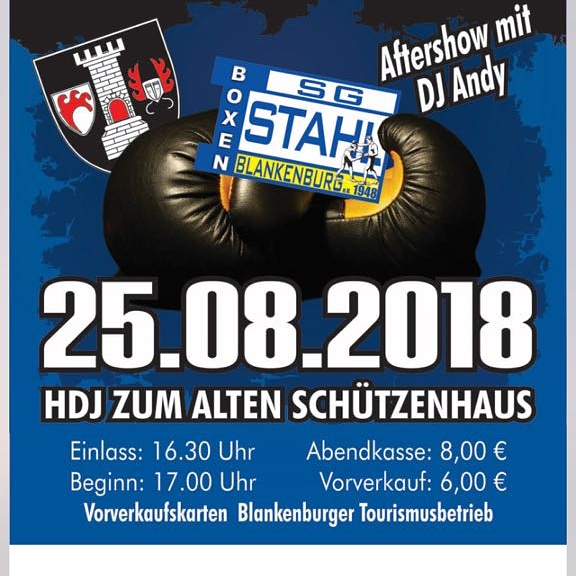
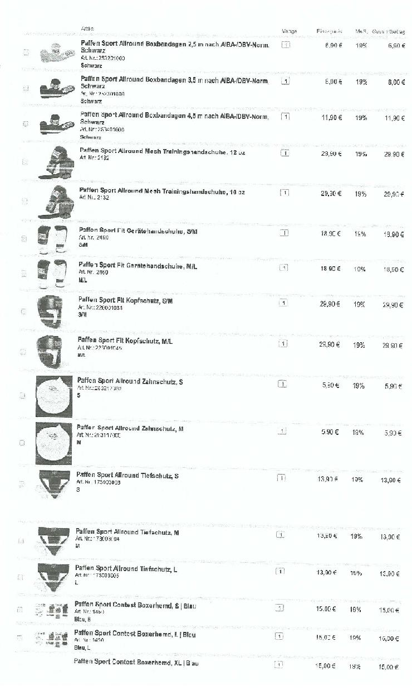
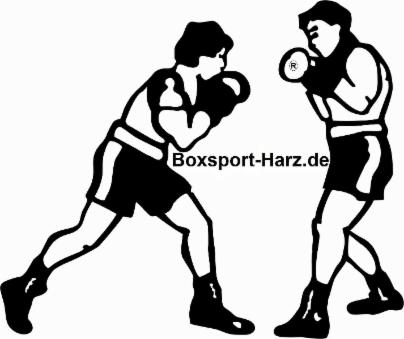

Archiv – Meldungen 2011–2015
Ältere Meldungen der Startseite (historischer Stand, nicht mehr aktuell). Aktuelles und Rückblick finden Sie auf der Startseite.

Diese Athletinnen und Athleten in der Sportart BOXEN werden Deutschland bei den 1. Europaspielen in Baku/Aserbaidschan (12. bis 28. Juni) vertreten.
(Nominierte 15 / Männer 10 / Frauen 5):
Serge Neumann (Box Olymp Saterland/bis 49 kg), Hamza Touba (SG Kaarst/bis 52 kg), Edgar Walth (BC Straubing/bis 56 kg), Atdhe Gashi (SV Motor Babelsberg/bis 60 kg), Kastriot Sopa (VfL Neckargartach/bis 64 kg), Abass Baraou (BC-RF Oberhausen/bis 69 kg), Denis Radovan (Colonia Köln/bis 75 kg), Igor Teziev (Fit-Boxing Esslingen/bis 81 kg), Albon Pervizaj (BC Traktor Schwerin/bis 91 kg), Max Keller (PTSV Aachen/über 91 kg), Ornella Wahner (Boxring Eintracht Berlin/bis 51 kg), Azize Nimani (Karlsruher SC/bis 54 kg), Tasheena Bugar (Karlsruher SC/bis 60 kg), Cindy Rogge - Blankenburg (Harz) (SV Halle/bis 64 kg), Sarah Scheurich (BC Traktor Schwerin/bis 75 kg).
Mitglieder-Info: 41 Krankenkassen haben seit 2014 bis zum 12. Februar 2015 unsere Rahmen-Kooperationsverträge akzeptiert und werden den Mitgliedsbeitrag von unseren Boxsport-Vereinen komplett oder teilweise zu übernehmen.
Fragen per Email: info@boxsport-harz.de
Pokalturnier des SV Fortschritt Oschatz e.V.
Ergebnisse vom 08. Februar 2014:
1. Delian Krause (MSV Bautzen) verliert gegen Ipragim Martazanow (BC Fürstenwalde) nach Punkten
2. Fabian Stoy (Könnern) verliert gegen Utsumior Nuradi (SC Borna) nach Punkten
3. Patrick Voigt (Könnern) gewinnt gegen Dano Gustke (SC Borna) nach Punkten
4. Annett Fischer (MVE Mutzschen) gewinnt gegen Estella Werner (Könnern) nach Punkten
5. Nabil Stein (BC Fürstenwalde) gewinnt gegen Justin Ihm (Saalfeld) nach Punkten
6. Magomed Shakhbiev (DHfK Leipzig) gewinnt gegen J.E. Schönrock (Nordhäuser SV) nach Punkten
7. Pascal Stoy (Könnern) verliert gegen Richard Pawlik (Hettstedt) nach Punkten
8. Dominik Karagic (Atlas Leipzig) gewinnt gegen L. Goldhammer (Nordhäuser SV) nach Punkten
9. Moussa Kassab (BC Fürstenwalde) gewinnt gegen German Esaulkov (Atlas Leipzig) nach Punkten
10. Sean Ludwig (SC Borna) gewinnt gegen Max Günther (BC Riesa) nach Punkten
11. Patrik Docekal (Usti) gewinnt gegen O. Gauer (Nordhäuser SV) nach Punkten
12. Angelo Campo (MSV Bautzen) verliert gegen Petr Docekal (Usti) nach Punkten
13. Marek Poncik (Usti) verliert gegen Sebastian Ott (SVF Oschatz) nach Punkten
14. Edward Simonjan (BC Oberhavel Velten) gewinnt gegen Daniel Conka (Usti) nach Punkten
15. Nikita Fokin (Nordhäuser SV) gewinnt gegen Luis Hildebrand (Thale) nach Punkten
16. Susi Belter (Klingenthal) gewinnt in der 1. Runde gegen Sarah Kiessling (BC Olympia Leipzig) durch Aufgabe
17. Justin Pieters (BC Fürstenwalde) verliert gegen Genady Tabler (Nordhäuser SV) nach Punkten
Ergebnisse vom 07. Februar 2014:
1. Leon Boitz (BT Roßwein/Döbeln) verliert gegen J.E. Schönrock (Nordhäuser SV) nach Punkten
2. Magomed Shakhbiev (DHfK Leipzig) gewinnt in der 1. Runde gegen Till Willig (Hettstedt) nach Aufgabe
3. Amin Benjaziar (VfL Spremberg) verliert gegen Richard Pawlik (Hettstedt) nach Punkten
4. Dominik Karagic (Atlas Leipzig) gewinnt gegen Delian Krause (MSV Bautzen) nach Punkten
5. Elias Ghazouani (Atlas Leipzig) verliert gegen L. Goldhammer (Nordhäuser SV) nach Punkten
6. Thoralf Schöller (Atlas Leipzig) verliert gegen Ipragim Martazanow (BC Fürstenwalde) nach Punkten
7. Tamino Doberschütz (Atlas Leipzig) verliert gegen Duc Nugyen (HG 85 Köthen) nach Punkten
8. Islam Shakhbiev (DHfK Leipzig) gewinnt gegen Fabian Stoy (BW Könnern) nach Punkten
9. Marek Poncik (Usti) gewinnt in der 1. Runde gegen Paul Matthia (HG 85 Köthen) durch tKO
10. Moussa Kassab (BC Fürstenwalde) verliert gegen Ben Walter (VfL Spremberg) nach Punkten
11. Pascale Hoppe ((HG 85 Köthen) verliert in der 1. Runde gegen Max Günther (BC Riesa) nach Aufgabe
12. Sören Heydrich (HG 85 Köthen) gewinnt gegen Sean Ludwig (SC Borna) nach Punkten
13. Petrik Döcekal (Usti) gewinnt in der 3. Runden gegen Henry Birkholz (BT Roßwein/Döbeln) durch tKO
14. Max Boitz (BT Roßwein/Döbeln) gewinnt gegen Magomed Matiev (DHfK Leipzig) nach Punkten
15. Maxim Arzimanov (Atlas Leipzig) gewinnt gegen Genady Tabler (Nordhäuser SV) nach Punkten
16. Max Hoppe (HG 85 Köthen) verliert gegen German Esaulkov (Atlas Leipzig) nach Punkten
17. Josef Klante (SVE Mutzschen) gewinnt in der 1. Runde gegen Petr Docekal (Usti) durch tKO
18. Angelo Campo (MSV Bautzen) gewinnt gegen Justin Ihm (SSV Saalfeld) nach Punkten
19. Edward Simonjan (BC Oberhavel Velten) gewinnt in der 2. Runde gegen Toni Wetzlaff (SVE Mutzschen) durch tKO
20. Daniel Conka (Usti) verliert gegen Kevin Pohle (SSV Saalfeld) nach Punkten
21. Dennis Fink (SVE Mutzschen) verliert gegen Luis Hildebrand (Thale) nach Punkten
22. Alik Aloyan (DHfK Leipzig) gewinnt gegen Nikita Fokin ( Nordhäuser SV) nach Punkten
23. Sebastian Ott (SVF Oschatz) gewinnt gegen Robin Rehse (Hettstedt) nach Punkten
24. O. Gauer (Nordhäuser SV) gewinnt in der 1. Runde gegen Marvin Schröder (BC Oberhavel Velten) durch tKO
25. Sergi Mamucharashvili (DHfK Leipzig) gewinnt gegen Patrick Voigt (Könnern) nach Punkten
26. Dario Gustke (SC Borna) verliert in der 3. Runde gegen Yasin Cakir (BC Fürstenwalde) durch tKO
27. Roman Hamido (BC Fürstenwalde) verliert gegen Jan Hamet (Usti) nach Punkten
28. Ibragim Maghtiev (BC Fürstenwalde) gewinnt gegen Markus Kronenberg (Stahl Coswig) nach Punkten
29. Baro Baroev (SSV Saalfeld) gewinnt gegen Johannes Hirsch (SV Ermsleben) nach Punkten
30. Maik Andersson (BC Oberhavel Velten) verliert gegen Toni Kloß (Könnern) nach Punkten
13. Febro-Neujahrspokal
in 39249 Barby
Ergebnisse vom 17. Januar 2015:
1. Fabian Komiczek (Lok Stendal) endet unentschieden gegen Justin Hellie (PSV Schönebeck),
2. Jan Bessel (SV Lindenweiler) verliert gegen Simon Heier (PSV Schönebeck) nach Punkten,
3. Malik Shadalov (Eintracht Berlin) gewinnt gegen Till Willig (Stahl Thale) nach Punkten,
4. Agron Sinani (Eintracht Berlin) verliert gegen Danilo Rosendahl (Boxunion Straußberg) nach Punkten,
5. Fabian Stoy (SV Blau Weiß Könnern) verliert gegen Alexander Lehmann (BSV Return to Fight) nach Punkten,
6. Luis Hildebrand (Stahl Thale) gewinnt gegen Justin Schwan (Eintracht Berlin) nach Punkten,
7. Kristian Leshi (BSV Return to Fight) verliert gegen Jeremy Fischer (Boxunion Straußberg) nach Punkten,
8. Hassan Alias (BSV Return to Fight) verliert gegen Jihad Nasif (Eintracht Berlin) nach Punkten,
9. Ali Jamahl Rashid (Boxring Bernburg) gewinnt gegen Nick Dübecke (PSV Schönebeck) nach Punkten,
10. Magomed Shakmurzaev (Eintracht Berlin) verliert gegen Argishti Terterjan (PSV Schönebeck) nach Punkten,
11. Isabell Hoffmann (Boxring Bernburg) verliert gegen Estella Werner (SV Blau Weiß Könnern) durch tko in der 2. Runde,
12. Witali Dell (Eintracht Berlin) gewinnt gegen Aras Kalo (Lok Stendal) durch Aufgabe in der 3. Runde,
13. Mohamed Mitsaev (Blau Gelb Berlin) verliert gegen Ali Hussein (Lok Stendal) nach Punkten,
14. Aziz Hussein (Lok Stendal) verliert gegen Matthias Blank (Boxunion Straußberg) nach Punkten,
15. Maxim Macht (BC Nordwest Magdeburg) verliert gegen Patrick Voigt (SV Blau Weiß Könnern) nach Punkten,
16. Keno Alhassan (Boxring Bernburg) gewinnt gegen Armands Kudrjavcevs (SV Lindenweiler) nach Punkten,
17. Justin Flügge (SV Lindenweiler) gewinnt gegen Leon Döbbelin (Lok Stendal) nach Punkten,
18. Willy Claus (BC Nordwest Magdeburg) gewinnt gegen Nico Kneisel (SV Blau Weiß Könnern) durch tko in der 3. Runde,
19. Toni Kloß (SV Blau Weiß Könnern) gewinnt gegen Gornik Melkonyan (PSV Schönebeck) nach Punkten.
Frohe Weihnachten
und einen
gesunden Start in das neue Jahr 2015.
1. Einladung
Liebe Sportfreunde,
hiermit laden wir euch am 17.01.2015 zu unserem 13. Febro-Pokal ein. Für die beste Mannschaft gibt es den Mannschaftspokal, außerdem werden der beste Boxer, der beste Kämpfer und der beste Nachwuchsboxer (AK Schüler) mit kleinen Pokalen geehrt. Für alle Wettkämpfer gibt es Urkunden. Wettkampfhandschuhe sind mitzubringen, Startgebühren werden keine erhoben. Denkt bitte im Vorfeld an die Registrierung und ärztliche Untersuchung!
Ort: Barby, Gaststätte „Zum Rautenkranz“
Beginn: 16.00 Uhr,
Wiegen: von 13.00-14.00 Uhr
Wenn möglich schickt uns eine Teilnehmerliste mit Kampfstatistik und Gewicht per Mail an: reinharz@gmx.de.
Wie immer laufen die Vorabsprachen telefonisch über Frank Käsebier.
Mobil: 01714239608
Festnetz: 03928404008

Liebe Sportfreunde,
ich muss Euch auf diesem Wege die traurige Mitteilung machen, dass heute unser Ehrenpräsident Manfred Jost im Alter von 80 Jahren verstorben ist. Der langjährige Präsident unseres Landesverbands und zuvor Vorsitzende des Bezirksfachausschusses Boxen im Bezirk Halle erlitt am vergangenen Dienstag bei einem Ausflug in den Harz einen Schlaganfall.
Unser Mitgefühl gilt seiner Ehefrau und den Angehörigen.
Wir werden Manfred Jost ein ehrendes Andenken bewahren.
Matthias Feist
aktueller Präsident LV Sachsen-Anhalt (Sept. 2014)
U 21- Meisterschaften 2014
Bei den Deutschen Box-Meisterschaften der U 21-Junioren in Eichstätt hat Ali Rashid von der SG Stahl Blankenburg die Bronzemedaille erkämpft. Er vertrat die Farben Sachsen-Anhalts in der 56-kg-Klasse. Mit einem 3:0-Punktsieg über Kaan Akublug (NRW) zog er ins Halbfinale ein, hier unterlag er dem Kaderathleten Alexander Fengler aus Baden-Württemberg knapp mit 1:2-Richterstimmen. Gegen starke Konkurrenz war dieser dritte Platz ein toller Erfolg. "Stahl Blankenburg lebt und das harte Training lohnt sich", kommentierte Klaus Pansegrau den Erfolg seines Schützlings.
Foto: privat
Vier Boxer erkämpfen für sich ein Highlight
Wernigerode (pm/ds). Mit den Kämpfern Phillip Kommert, Christian Dampc, Ozan Kückük und Ricardo Bonin reiste der Wernigeröder Sportverein Rot-Weiss 1949 e.V. zur Box-Veranstaltung am Samstag, dem 17. Mai 2014.
Ozan Kückük traf auf Michele Kurth aus Blankenburg. Ozan zeigte sich in einer sehr guten Form und konnte sich nach zwei harten Runden dann in der dritten Runde durchsetzen. Erst beförderte er Kurth zu Boden und nach erneuten harten Schlägen von Ozan brach der Ringrichter ab und erklärte den Wernigeröder durch technischen K. O. zum Sieger. Christin Dampc und Phillip Kommert trafen in einem vereinsinternen Vergleichskampf aufeinander. Trotz dessen, dass die beiden sich sehr gut aus dem Training kennen, schenkten die beiden sich nichts und jeder wollte ihn für sich erringen. Beide zeigten eine technisch sehr gute Leistung doch zeigte Phillip sich konditionell überlegener. Dies konnte er sich auch zum Nutzen machen und überzeugte das Kampfgericht von sich. Er siegte nach Punkten.
Das Highlight aus Wernigeröder Sicht war ohne Zweifel der Kampf von Ricardo Bonin. Ihm gegenüber stand der Hettstedter Kai Baumann. Von der Erfahrung und der technischen Stärke des Hettstedters zeigte Ricardo sich völlig unbeeindruckt und lieferte eine herausragende Leistung ab. Er zeigte sich technisch und konditionell in Top-Form. Doch am Ende reichte es nicht für einen Sieg für den Wernigeröder. Er verlor nach Punkten.
Aber im Anbetracht der Leistung von Ricardo und des weitaus erfahreneren Gegners sind seine Trainer und das gesamte Team stolz auf ihn und natürlich auch auf alle anderen Kämpfer des Wernigeröder Sportvereins Rot-Weiss 1949 e.V.
Am 13.05.2014 17.00 Uhr fand in der Sportschule Hennef, dem Bundesleistungszentrum des DeutschenBoxsportVerband, der EM Ausscheidungswettkampf für die Ende Mai in Bukarest beginnende Frauen Europameisterschaften zwischen Cindy Rogge, LandesVerband Sachsen-Anhalt und Irina Schönberger, LV Baden-Württemberg statt.
Der gutklassige Wettkampf wurde durch ein neutrales Kampfgericht des LandesVerband NordRheinWestfalen geleitet und bewertet. Es gab in einer sehr spannungsgeladenen Auseinandersetzung einen knappen Punktsieg mit 2:1 Richterstimmen für die Athletin aus Sachsen-Anhalt, Cindy Rogge, die damit den Start bei der EM erkämpft hat und ab Sonntag zur Abschlussvorbereitung mit dem deutschen Frauen Aufgebot nach Polen reist. Disziplintrainer David Hoppstock und Cheftrainer Dr. Michael Bastian wohnten diesen Ausscheidungskampf bei und waren mit dem Urteil des Kampfgerichtes einverstanden.
Montag, den 17. März 2014 Die Landesmeisterschaften 2014 der Schüler, Kadetten, Junioren, Jugend in weiblich und männlich sind zu Ende gegangen und aktuell bei den Vereinen eingetragen.
Markus Wenzel erkämpft in Dingelstedt den Pokal
Boxsport-Saison 2014
Qualifiziertes Krafttraining wird in dem ortsansässigen Gesundheitsstudio gewährleistet und ist über Herrn P. Rümkasten buchbar (Nur für Inhaber der gültigen Clubkarte). Für Fragen steht Ihnen unser Team gern zur Verfügung. Email: info@boxsport-harz.de
Boxhalle/Blankenburg: Ein Schlagkraft-Messgerät wurde angeschafft!
Die Schlagkraftmessung erfolgt bei uns über einen hochpräzisen Kraftmesssensor, wie er in vielen Teilen der Industrie Verwendung findet, gepaart mit einer leistungsfähigen Meßelektronik, die ca. 200.000 mal pro Sekunde die Daten auswertet.
Die Vorteile der Schlagkraftmessung sind offensichtlich: Sie können überprüfen, wie produktiv Ihre Trainingsmethoden sind und mit Ihrem Trainer auf Basis dieser Werte das Trainingskonzept überprüfen und ggf. anpassen. Endlich bekommen Sie professionelle Werte, um Ihre Technik, Geschwindigkeit und Schlagkraft zu verbessern. Bis dato gab es solche Möglichkeiten nur für Profisportler! In Blankenburg kommt seit 2014 regelmäßig der Schlagkraft-Test zum Einsatz.
Was macht der Schlagkraftmesser?
- Messung der Schlagkraft in kg
- Messung des übertragenen Impulses (Schub)
- Berechnung der Trefferwirkung
- Schnelligkeit der Schlagentwicklung in ms
- grafische Darstellung des Kraftverlaufs
Was ermöglicht der Schlagkraftmesser?
- präzise Analyse und Bewertung von Schlag- und Stoßtechniken in allen Kampfsportarten
Kontrolle der Körperspannung
- erlaubt Rückschlüsse bei fehlerhaften Hand- und Fußtechniken
Analyse des Kraftverlaufs mit Berechnung und Anzeige der Trefferwirkung
Allgemeine Informationen zur Schlagkraftmessung:
Welche Schlüsse kann ich aus dem Kurvenverlauf ziehen?
Der Graph zeigt den Verlauf der Kraft über die Zeit während des Aufpralls. Interessant sind die Anstiegs- und Abfallzeiten der Kraft sowie evtl. vorhandene Unregelmäßigkeiten im Verlauf, wie sie zum Beispiel durch ein Wegknicken des Handgelenks hervorgerufen werden. Ein guter Schlag von einem trainierten Kampfsportler erzeugt einen schnellen Kraftanstieg mit langsamerem Abfall (durch die Körperspannung hält die Kraft länger).
Warum wird die Schlagkraft in kg angegeben?
Als Schlagkraft wird die senkrecht auf die Trefferfläche wirkende Kraftkomponente beim Aufprall bezeichnet. Da es sich um eine Kraft handelt, müsste diese selbstverständlich in Newton angegeben werden. Da der Nichtnaturwissenschaftler im Alltag mit dieser Einheit nur selten in Berührung kommt und Angaben über Schlagkräfte von Spitzensportlern meist auch in kg veröffentlicht werden, ist diese Konvention übernommen worden.
Was muss ich mir unter 300 kg Schlagkraft vorstellen?
Wenn die Schlagkraftanzeige nach einem Schlag 300 kg anzeigt, dann wirkte auf die Aufprallfläche für einen kurzen Moment die gleiche Kraft, als läge der 'Schlagmesser' auf dem Boden mit einem aufliegenden Gewicht von 300 kg. Die Wirkung ist also die gleiche, wie wenn man ein 300kg Gewicht auflegen und sofort wieder entfernen würde. Hier wird dann auch die Bedeutung des Impulses klar. Nimmt man das Gewicht langsamer weg, ist die Wirkung größer, weil die Kraft über einen längeren Zeitraum wirkt. Impuls ist Kraft mal Zeit. Liegt das Gewicht doppelt so lange auf, ist der Impuls doppelt so groß.
Was ist der Impuls?
Der Impuls ist eine physikalische Größe, unter der man sich als Kampfsportler am besten den Schub eines Schlages oder Trittes vorstellt. Er setzt sich zusammen aus Zeit und Kraft oder Gewicht und Geschwindigkeit. Wichtig für den Kampfsportler ist: Der Impuls, der auf den Gegner übertragen wird, öffnet die Deckung und lässt den Gegner rückwärts laufen.
Wie sieht der optimale Schlag aus?
Der optimale Schlag wird mit maximaler Schnelligkeit durchgeführt. Die antagonistischen Muskeln müssen hierfür möglichst locker sein (psychischer Zustand hier wichtig). Die Bewegung darf nicht kurz vor dem Ziel abgebremst werden, sonst nimmt die Trefferwirkung stark ab. Die notwendige Anspannung der Muskulatur zur Gelenkversteifung muss so spät wie möglich erfolgen. Wer viel mit Schlägen in die Luft trainiert, hat hier Nachholbedarf. Bei Erreichen der Maximalkraft müssen die beteiligten Gelenke maximal versteift werden. Dies vermeidet Verletzungen und erhöht den Impuls, da die Kraft etwas länger gehalten wird.
Wie maximiere ich meine Schlagkraft?
Als erstes muss das Versteifen der Gelenke im Ziel trainiert werden um Verletzungen vorzubeugen. Wenn hier übereilt vorgegangen wird, kann es leicht zu Verstauchungen oder Schlimmerem kommen. Es sollte immer bedacht werden, dass auch eine leichte Verstauchung erst abheilen und für diesen Zeitraum mit dem Training ausgesetzt werden muss. Das Polster sollte auch gerade für Anfänger nicht zu hart sein. Wer es also zu eilig hat, wird letztendlich länger brauchen. Trainiert werden sollte grundsätzlich nur mit maximaler Konzentration und nie im übermüdeten Zustand. Es ist völlig sinnlos, hunderte von Schlägen pro Trainingseinheit zu machen. Das steigert die Kondition, aber nicht die maximale Schnelligkeit und somit auch nicht die Schlagkraft. Wer wirklich in möglichst kurzer Zeit eine möglichst große Steigerung erreichen will, sollte direkt nach dem Aufwärmen einige wenige Schläge auf das Messgerät abgeben. Hierbei sollte die Priorität absolut auf Geschwindigkeit gelegt werden. Sobald die erreichten Werte auch nur leicht nachlassen, muss eine kurze Pause eingelegt und die Muskulatur ausgeschüttelt werden. Dann kann die Session wiederholt werden. Wenn die in der jeweiligen Session erreichten Werte fallen, wird die Übung beendet.
Die Erstellung einer vollständigen Schlagkraftanalyse dauert ca. 20 Minuten.
Hierfür berechnen wir (pro Person):
Nicht-Mitglieder: 49,- €
Mitglieder des Deutschen-Boxverbandes: 39,- € (Nachweis: Startbuch)
Mitglieder eines Profi-Boxverband: 29,- € (Nachweis: Registrierung bei BOXREC.com)
Mitglied bei einem Verein auf www.Boxsport-Harz.de: 9,- € (Nachweis: siehe oben)
Ein frohes und besinnliches Weihnachtsfest und einen erfolgreichen Start im Neuen Jahr wünschen wir Euch.
Fight-Night in Hettstedt am 02. November 2013
Tariq Rashid (SG Stahl Blankenburg 1948 e.V.)
55 Kilo
Edgar Karapetjian (Salzgitter) vs. Tariq Rashid (Blankenburg). Beide Kämpfer starteten verhalten und schienen erst einmal abzuwarten. Edgar Karapetjian war einen Hauch aktiver aber unsauber und landete dabei aber kaum klare Treffer. Dank der Schlagfrequenz schien die erste Runde dennoch an den Boxsportler aus Salzgitter zu gehen. In der 2. Runde boxte Tariq Rashid verhalten, aber traf hin und wieder, dass sogar Edgar Karapetjian zu Boden ging und angezählt werden mußte. Beide Sportler waren vom Boxstil ähnlich und schenkten sich nichts. Die Runde 2 ging damit an Tariq Rashid. Insgesamt blieb es aber ein Kampf, der arm an Ereignissen war. Ab der 3. Runde wurde nochmal von beiden Kämpfern alles gegeben, um nach den Möglichkeiten, die letzte Runde für sich zu entscheiden. Die Punktrichter werteten diese Paarung mit 2:1 Richterstimmen für Tariq Rashid und somit ging der Sieg nach Blankenburg/Harz.
Tag 1: Deutsche Meisterschaft in Oldenburg 2013
Teilnehmer: Sebastian Knigge
(SG Stahl Blankenburg 1948 e.V. Abt.: BOXEN)
69 Kilo
Oleg Schäfer (Bayern) vs. Sebastian Knigge (Sachsen/Anhalt). Beide Kämpfer starteten verhalten und schienen erst einmal abzuwarten. Schäfer war einen Hauch aktiver, landete dabei aber kaum klare Treffer. Dank der Schlagfrequenz schien die erste Runde dennoch an den Bayern zu gehen. Auch in der 2. Runde boxte Knigge zu verhalten und ließ zu, dass Schäfer über die Aktivität Vorteile hatte. Vor allem die Körperarbeit des Bayern zahlte sich nun aus. Insgesamt blieb es aber ein Kampf, der arm an Ereignissen war. Nach diesem Muster wurde auch der 3. und letzte Durchgang bestritten. Schäfer boxte locker seinen Stiefel runter, während Knigge kaum etwas machte und den Kampf über die Aktivität abschenkte. Entsprechend deutlich war auch der 3-0 Punktsieg für Schäfer.
Großer Erfolg für das DBV Team beim EU-Cup in Keszthely/Ungarn! Cindy Rogge und Anika Scheuermann sorgten mit ihren Punktsiegen für einen erfolgreichen Start in den Donnerstag und sorgten nach einem Mittwoch, an dem viele Deutsche aufgrund von Fehlurteilen raus flogen, für einen Aufwärtstrend.
Cindy Rogge bekam es in ihrem Kampf mit der Polin Beata Koroniecka zu tun. In diesem Elite-Kampf der 64-Kilo-Klasse musste Cindy Rogge eine beherzte Gegnerin bezwingen, hatte den Kampf aber von Beginn an unter Kontrolle. Dem Klammern der Polin begegnete Cindy Rogge mit taktischer Cleverness, indem sie immer dann Treffer setzte, wenn sich die Boxerinnen voneinander lösten. Koroniecka mühte sich redlich und hielt einigermaßen mit, fand aber bis zum Ende kein Mittel, um den Kampf herum zu reißen. Cindy Rogge siegte verdient nach Punkten und steht nun im Halbfinale.
Sehr geehrte Damen und Herren,
sehr geehrte Kolleginnen und Kollegen,
In Ergänzung und auch in Abänderung dieser Veröffentlichungen möchte ich folgende verbindliche Ausführungen machen:
1. Vor Beginn eines jeden Kampfes darf der Kopfschutz (außer Männer und Elite) nur im Ring aufgesetzt werden.
2. Bei der Begrüßung der beiden Boxer(innen) im 10-Point-muss-System muss der Ringrichter vier kurze Belehrungen durchführen:
a. keine Kopfstöße verursachen
b. keine Innenhände schlagen
c. keine Tiefschläge schlagen
d. nicht Festhalten oder Klammern
3. Bei einem Niederschlag handelt es sich um einen normalen Treffer, er hat keinerlei gravierende Auswirkungen für die laufende Runde.
Diese Änderung ist neu und verbindlich. Alle anderslautenden Regelungen sind hiermit nichtig.
4. Der Ringrichter darf mit den Sportler(innen) reden und darf die Sportler beim Trennen auch anfassen, er darf auch Zeichen von Unkorrektheiten während des Kampfes zeigen oder sprechen, ohne den Kampf zu unterbrechen.
5. Wenn der Mundschutz nicht absichtlich ausgespuckt wird, muss beim ersten mal eine Ermahnung an den Sportler(in) erfolgen.
Wenn der Mundschutz zum zweiten mal nicht absichtlich ausgespuckt wird, muss erneut eine Ermahnung erfolgen.
Beim dritten mal ohne absichtliches Ausspucken des Mundschutzes muss eine Verwarnung erfolgen.
Spuckt der Sportler(in) den Mundschutz absichtlich aus, ist sofort zu verwarnen. Danach gibt es keine Ermahnungen mehr, sondern wie gewohnt wird weiter verwarnt und eventuell muss auch eine Disqualifikation ausgesprochen werden ( 5 mal ohne Absicht Verlust Mundschutz).
6. Es gibt keine Vorschriften mehr, wie oft für wiederholte Fouls ermahnt werden kann und somit auch keinen Zwang einer Verwarnung.
Dem Ringrichter wird wesentlich mehr Verantwortung gegeben für einen ordnungsgemäßen Ablauf des Kampfes.
7. Verwarnungen werden vom Punktrichter nicht beachtet in der Rundenbewertung. Die Verwarnung wird vom Delegierten vom Endergebnis mit einem Wertungspunkt vom Ergebnis des Verwarnten abgezogen. z.B. blaue Ecke Verwarnung und Endergebnis bei männlicher Jugend 29 : 28 für Rot, würde der Delegierte das Ergebnis auf 29 : 27 abändern. Würde bei diesem Beispiel rot eine Verwarnung erhalten, würde der Delegierte das Ergebnis auf 28:28 ändern. Haben die beiden anderen Punktrichter eine Ecke vorne, wird das Ergebnis mit 2:1 für blau verkündet. Haben alle drei Punktrichter jeweils einen anderen Sieger ( einer rote Ecke, einer Unentschieden, einer blaute Ecke), so muss der Punktrichter mit dem Urteil Unentschieden den Punktzettel vom Delegierten zurück erhalten und sich durch einen Kreis auf dem Punktzettel für eine Ecke entscheiden.
Danach wird das Urteil 2: 1 verkündet. Die Punktzettel können vom Ringrichter eingesammelt werden, der Delegierte kann aber auch eine Person seines Vertrauen dafür einsetzen, um den Ringrichter von seinen Aufgaben nicht ablenken zu lassen. Besonders bei Deutschen Einzelmeisterschaften, wo jede Runde ein neuer Punktzettel ausgefüllt werden muss.
8. Die Zeit während der laufenden Runde wird nicht durch das Kommando "Stopp" unterbrochen, sondern nur durch das neue Kommando "Time".
Mit dem Kommando "Box" wird die Zeit wieder laufen gelassen. Das Kommando "Time" wird nur dann verkündet, wenn eine längere Unterbrechung notwenidg ist, wie z.B. Ordnen der Kampfkleidung, Schuhe binden, Ringarzt konsultieren, Nase säubern durch den Ringrichter u.a.m.
Kurze Unterbrechungen wie Ermahnungen werden zeitlich nicht zur Unterbrechung führen, der Zeitnehmer lässt die Uhr weiter laufen.
9. Bei einem Tiefschlag, der zu keinerlei Wirkungen führt, wird der tiefschlagende Kämpfer ermahnt. Der Ringrichter muss dafür nicht den Kampf stoppen.
Bei einem Tiefschlag, der hart geführt wurde und/oder absichtlich, ist sofort der tiefschlagende Boxer zu disqualifizieren. Wenn der Ringrichter anfängt den Boxer wegen Tiefschlag anzuzählen, muss er nach dem Zählen das Kommando "Time" laut sagen. Der Zeitnehmer stoppt die Uhr und muss mit einer zweiten Uhr die 90 Sekunden für die Regeneration stoppen. Wenn der tiefgetroffene Sportler früher als 90 Sekunden wieder kampffähig ist und den Kampf weiterführen will, so muss der tiefschlagende Boxer eine Verwarnung erhalten. Ist aber der getroffene Boxer nach 90 Sekunden nicht kampffähig, so wird dieser zum Verlierer durch TKO verkündet. Hintergrund dieser Entscheidung ist das Ergebnisse der medizinischen Kommissionen, dass ein Boxer nach 90 Sekunden plus Zeit von 8 Sekunden des Anzählen in der Lage sein muss, den Kampf weiterzuführen.
10. Wenn ohne dem Box-Pointer im 10-Point-muss-System gepunktet wird, kann auch nur mit drei Punktrichtern gepunktet werden. In diesem Fall sind die Punktrichter so zu platzieren, dass Punktrichter 1 links neben dem Delegierten an der roten Ecke, Punktrichter 2 dem Delegierten gegenüber und Punktrichter 3 rechst vom Delegierten an der blauen Ecke befinden.
11. Der Zeitnehmer hat jeweils nach den Rundenpausen 10 Sekunden vor Ablauf der Zeit laut hörbar die Boxer, den Ringrichter und die Sekundanten zu informieren.
Dazu schlägt er mit einem harten Gegenstand (z.B. Hammer) auf einen Holzbrett oder ähnlichem hölzernen Untergrund.
12. Der Ringsprecher hat nur auf Anweisung des Delegierten Ergebnisse zu verkünden. Zwischenergebnisse sind untersagt.
13. Im § 10 Abs. 7 ist in der WB des DBV aufgeführt, dass erstkämpfende Boxer(innen) nach dem 30 Geburtstag nicht boxen dürfen. An dieser Stelle wird noch einmal darauf hingewiesen, dass es sich bei diesen Erstkämpfen nach dem 30. Geburtstag um das olympische Boxen handelt und es unerheblich ist, ob vorher schon in anderen Kampfsportarten trainiert oder Wettkämpfe durchgeführt wurden.
14. Bei allen Deutschen Meisterschaften muss mit dem 10-Point-Muss-System gearbeitet werden. Dazu gehören alle Landesmeisterschaften, in denen sich Sportler für Deutsche Einzelmeisterschaften qualifizieren können.
15. Sekundanten dürfen ihre Boxer(in) Hinweise während des Kampfes geben, sie dürfen aber weder Schreien, Klatschen oder auf den Ringboden schlagen, die Sekundanten dürfen auch ihren Sitzplatz in der Ecke während der Rundenzeiten nicht verlassen und auch nicht aufstehen.
16. In den Fällen, wo bei Männer (Elite) - Wettkämpfen noch keine 12 Unzen-Box-Handschuhe zur Verfügung stehen, wird weiterhin mit 10-Uzen-Boxhandschuhen geboxt. Wir müssen dort eine Übergangsregelung schaffen, da sich die Ausrüster bemühen, die 12-Unzen-Boxhandschuhe anzubieten.
Aus diesen Ausführungen wird sehr deutlich, dass die neuen AIBA-Regeln und unsere Wettkampfbestimmungen sich in einem dynamischen Prozess befinden und wir auch alle noch Erfahrungen sammeln müssen. Es ist nicht ausgeschlossen, dass weitere, detaillierter Änderungen eintreten werden.
Nach dem wichtigen AIBA - Kongress am 15. bis 20.07.2013 werden wir durch unseren Präsidenten Jürgen Kyas erfahren, ob dieser dynamische Prozess der Änderungen abgeschlossen ist oder ob der AIBA-Kongress andere Regeln beschließt. Als EC - Mitglied der AIBA wird Jürgen Kyas als Kenner der Praxis vor Ort uns schnell informieren können.
Der Kampfrichterausschuss wird weiteres, aktuelles Schulungsmaterial neu erarbeiten und allen Landesverbänden zur Verfügung stellen.
Ich möchte dringend bitten, alle Trainer, Kampfrichter und Offizielle über diese Änderungen zu informieren und Schulungen in den Landesverbänden
zeitnah zu organisieren. Der Kampfrichterausschuss wird sich bemühen, diese Schulungen zu unterstützen.
Wenn das Schulungsmaterial überarbeitet wurde, wird es auch auf der Homepage des DBV veröffentlicht.
geschrieben von Erich Dreke (Kampfrichter-Obmann DBV)
Frauen DM 2013: Cindy Rogge (Stahl Blankenburg)
Geschrieben von M. König
Finale: Olga Brzezinska (Baden Württemberg) bekam es anschließend mit Cindy Rogge (Sachsen Anhalt) zu tun. Die Baden Württembergerin startete aggressiv, lief dabei aber zuweilen in den Jab von Cindy Rogge, die flink unterwegs war und Konter setzte. Dabei konnte sie sich leichte Vorteile erarbeiten. In den mittleren Runden kam Olga Brzezinska etwas auf und konnte Cindy Rogge in einen Schlagabtausch ziehen, in dessen Verlauf beide Kämpferinnen zu Treffern kamen, Das Gefecht verlief in den Runden 2 und 3 äußerst eng, ehe Cindy Rogge im 4. und letzten Durchgang wieder die Kontrolle übernehmen und mehrere Rechte am Kopf von Olga Brezezinska unterbringen konnte. Die Punktrichter sahen den Kampf dann allerdings etwas anders als die Mehrheit des Publikums und erklärten Brzezinska zur 2-1 Punktsiegerin.
Das Halbfinale: Die Freude am Finaleinzug war Cindy Rogge deutlich anzusehen. Die Boxerin aus Blankenburg/Harz in Sachsen Anhalt konnte am Freitag ihr Halbfinale gegen Luise Hanl klar für sich entscheiden und hat nun die Chance, Deutsche Meisterin 2013 zu werden.
Rogge hatte gegen die aggressiv boxende Hanl stets den richtigen Überblick, zirkelte flink um ihre Gegnerin herum und setzte Treffer, wo sich Lücken boten. Die schnellen Kombinationen von Rogge überzeugten letztendlich auch die Punktrichter, welche die Bad Blankenburgerin mit 3-0 Richterstimmen zur Siegerin erklärten und den Finaleinzug besiegelten.
Zufrieden zeigte sich auch ihr Trainer. „Sie hätte natürlich noch ein paar Sachen besser machen können, aber insgesamt war es schon gut. Ich habe ein gutes Gefühl für das Finale!“ Diese Meinung teilte auch die Sportlerin selber. „Das wird schon!“, so Cindy Rogge.
Ihre Finalgegnerin war am Freitag übrigens noch fleißig dabei, Gewicht zu machen und rannte im Schwitzanzug über das Gelände. Man darf gespannt sein, welchen Einfluss dies auf den Kampf am Samstag nehmen wird.
Alle Teilnehmerinnen bei den Deutschen Meisterschaften der Frauen 2013 in Straubing/Bayern.
48 kg: Christina Rupprecht (1. BC Haan Augsburg/BY) 22/15/7/0; Sarah Bormann (TG Hanau/HE) 47/41/5/1; Felicitas Vogt (Gold-Blau Stuttgart/BW) 30/18/10/2.
51 kg: Bentje Andresen (Boxring TSV Plön/SH) 8/4/3/1/0; Diana Loichinger (Boxfit Regensburg/BY) 22/9/13/0; Diana Warnke (SV Preußen Frankfurt/Oder/BB) 29/14/12/3; Annemarie Stark (Boxring TSV Plön/SH) 25/18/5/2; Maria Hamel (Agon Hamburg/HA) 47/33/13/1; Franziska Lyß (BC 72 Braunschweig/NS) 15/7/7/1.
54 kg: Dragana Pozderovic (BC Piccolo Fürstenfeldbruck/BY) 10/7/3/0; Kristina Slobodyanikov (BC Kaufbeuren/BY) 43/27/12/4; Azize Nimani (SC Colonia 06 Köln/NRW) 41/36/5/0; Pinar Yilmaz (ASV Wuppertal/NRW) 52/39/11/2; Diana Hörmann (Champ Boxing Ravensburg/BW) 6/3/2/1.
57 kg: Ornella Wahner (Berliner TSC/BE) 42/40/2/0; Beata Blaszyk (BC Nordend Offenbach/HE) 44/32/11/1; Sandra Atanassow (BR Atlas Leipzig/SN) 32/21/11/0; Samia El-Khaouat (SC Colonia 06 Köln/NRW); Andrea Freymuth (TV Papenburg/NS) 20/6/14/0; Viktoriya Avramenko (KSC Backnang/BW) 20/13/7/0; Melanie Milles (BC Weißenburg/BY) 40/22/15/3; Katharina Eckstein (TG Karlstadt/BY) 26/16/10/0; Marlene Plank (DJK Rosenheim/BY) 11/6/5/0; Nadine Thomas (BC Boek ESA/TH) 4/3/1/0; Leyla Horn (Box-Out Hamburg/HA) 19/9/10/0.
60 kg: Regina Slobodyanikov (BC Kaufbeuren/BY) 38/19/17/1; Katharina Woischke (BC Piccolo Fürstenfeldbruck /BY) 11/7/4/0; Tiffany Coussens (TV Bad Windsheim/BY) 17/14/3/0; Dilara Kocak (Kempokan Hannover/NS) 6/4/2/0; Dilar Kisikyol (TuS Rheindorf/NRW) 17/10/7/0; Maike Klüners (SC Colonia 06 Köln/NRW) 47/27/19/1; Katharina Drasdo (BC Ilmenau/TH) 4/3/1/0; Tasheena Bugar (Karlsruher SC/BW) 67/45/23/9.
64 kg: Cindy Rogge (SG Stahl Blankenburg/SA) 36/25/9/2; Katinka Semrau (BC Piccolo Fürstenfeldbruck/BY) 33/22/8/2; Susanne Hofstetter (BC Piccolo Fürstenfeldbruck/BY) 9/6/3/0; Natalie Ramm (Agon Hamburg/HA) 20/10/7/3; Amina Zefi (SC Osnabrück/NS) 14/12/2/0; Olga Brzezinska (SSV Ulm/BW) 30/19/9/2; Sarah Ehrmann (Boxteam Lahn/RL) 20/10/9/1; Luise Hanl (1. SSV Saalfeld/TH) 19/10/7/2.
69 kg: Nadine Apetz (BR Hilden/NRW) 24/17/6/0; Irina Schönberger (PBG Bruchsal/BW) 13/10/3/0; Kristina Stürmer (BC Eichstätt/BY) 12/5/7/0; Janine Hofmann (SC Colonia 06 Köln/NRW) 52/27/23/2; Darlene Joerling (Telekom Münster/NRW) 20/16/4/0.
81 kg: Andrea Strohmeier (BC Gifhorn/NS) 50/27/23/0; Sarah Scheurich (BC Traktor Schwerin/MV) 24/20/3/1; Melanie Stark (BC 1899 Mühlhausen/TH) 7/4/2/1; Ricarda Schicht (KSC Bensheim/HE) 3/3/0/0.
82 kg: Tatjana Blum (Kagdamala Heide/SH); Annabella Fiedler (Eichsfelder SC/TH) 9/7/2/0.
6. – 9. Juni 2013 Deutsche Meisterschaften der U15 in Lindow - mit Johannes Hirsch (SV Ermsleben) und Maximilian Schöntag (SG Stahl Blankenburg).
Kampfsport-Verein mit neuem Programm-Angebot
Skorpion-Fight mit neuem Programm-Angebot für Boxsportler und Boxinteressierte. Seit dem 01 Juni 2013 ist der Bereich „Boxsport“ bei Skorpion-Fight dazukommen und wird sich in Richtung „Profiboxen“ ausrichten. Da es schon seit 1948 in Blankenburg/Harz die Sportart Boxen als olympische Sportart gibt und recht erfolgreich geführt wird, ist der Profiboxsport als Zusatzangebot und Weiterentwicklungsmöglichkeit einzuschätzen. Ehemalige Amateur-Boxsportler regten dieses Programm langfristig an und finden hier einen Anreiz für neue Aufgaben und Ziele. Bereits gegen 10.00 Uhr zur Eröffung am Samstag, den 01. Juni 2013 waren schon zahlreiche Interessierte erschienen und brachten auch die Kinder zum Ausprobieren mit. Nach feierlicher Eröffnung wurde bei fachkundigen Gesprächen mit Eltern schon schnell klar, dass es in eine andere Richtung geht, als beim olympischen Boxen. Die beiden Chef-Trainer I. Meyer und R. Pietsch führen das Programm und sind schon bereits im Amateurboxen keine Unbekannten und formten schon seit etlichen Jahren erfolgreiche Boxsportler aus Blankenburg zu Erfolgen. Die neuen Aufgaben sehen sie als Bereicherung ihrer Kompetenzen und Herausforderung mit klaren Zielen. Die Stadt unterstützt das Projekt - wegen ihrer Finanzlage aber nur ideell und mit Know-How. Trainiert wird in der Helsunger Straße 34, 38889 Blankenburg/Harz und zwar Mittwoch und Freitag ab 17.30 – 19.00Uhr.
Cindy Rogge erkämpft SILBER beim Round Robin Turnier 2013
Vom 17. - 19. Mai 2013 führte der Deutsche Boxsport-Verband in Wittenburg und Hamburg mit seinen Auswahlboxerinnen ein Round Robin Turnier durch.
Deutschland war mit zwei Mannschaften vertreten und komplettiert wurde das Teilnehmerfeld durch die Auswahlmannschaften aus Ungarn und Polen.
Cindy Rogge SG Stahl Blankenburg startete für GER 1 und belegte am Ende des Turniers einen ausgezeichneten II. Platz. In der Gewichtsklasse bis 64 kg verlor Cindy im ersten Kampf gegen die Ungarin Bianka Nagy 12 : 9. Nagy wurde am Ende auch Turniersiegerin.
Im zweiten Kampf besiegte Cindy die Polin Sylvia Maskim mit 17 : 12 Wertungspunkten. Den letzten Kampf gewann sie durch W.O. gegen Natalie Ramm GER II. Mit dieser Leistung empfahl sich Cindy Rogge auch für die kommenden internationalen Aufgaben und unserer Glückwunsch geht auch an die Trainer Siegfried Vogelreuter LLZ und Klaus Pansegrau Blankenburg.An drei Tagen geht es in Wittenburg, zwischen Hamburg und Schwerin, rund. Beim Round Robin Turnier treffen die Teams der Mannschaften Deutschland 1, Deutschland 2, Polen und Ungarn aufeinander.
Freitag, dem ersten Wettkampftag, steigt GER 1 gegen das polnische Team in den Ring und GER 2 bekommt es mit den Ungarinnen zu tun. Sonnabend werden dann die Teams getauscht. Am Sonntag kommt es zum direkten Duell der beiden deutschen Teams und Polen trifft auf Ungarn.
Die Teilnehmerinnen auf einen Blick:
GER 1 GER 2
Felicitas Vogt 48 kg Sarah Bormann 48 kg
Diana Warnke 51 kg Annemarie Starke 51 kg
Selin Korkamz 54 kg Pinar Yilmaz 54 kg
Sandra Atanassow 57 kg Ornella Wahner 57 kg
Viktoria Avramenko 60 kg Tasheena Bugar 60 kg
Natalie Ramm 64 kg Cindy Rogge 64 kg
Janine Hofmann 69 kg Irina Schöneberger 69 kg
Sarah Scheurich 81 kg
Neue Regelungen bei der AIBA ab dem 01. Juni 2013
Ab dem 01. Juni 2013 wird bei der ELITE der Männer ohne Kopfschutz gekämpft werden. Diese neue Regelung betrifft nur die ELITE der Männer. Alle anderen Altergruppen und auch die Elite der Frauen werden weiterhin mit Kopfschutz boxen.
Die Altersbeschränkung sowohl bei den Frauen als auch bei den Männern wird von 34 auf 40 Jahre erhöht. Das bedeutet, dass Boxsportler des Jahrgangs 1976 die Chance haben, an den olympischen Spielen 2016 teilzunehmen.
Das "10-Points-Must-System" hat folgende Kriterien zur Grundlage:
- Anzahl der klaren Treffer
- Kampfgeist
- Dominanz im Ring
- Technische und Taktische Überlegenheit
- Regelverstöße
Nach diesen Kriterien können folgende Wertungen erteilt werden:
10 - 9 (enge Runde)
10 - 8 (Gewinner mit Dominanz)
10 - 7 (klare Überlegenheit)
10 - 6 (völlige Überlegenheit)
(Alle Regelungen betreffen auch AOB (AIBA Open Boxing), WSB (World Series of Boxing) und APB (AIBA Professional Boxing).
Auslegung der aktuell gültigen Wettkampfbestimmung (§ 15, Absatz 6)
Amtierung von lizenzierten Übungsleitern/Trainern und Teilnahme von Sportlern bei Profiveranstaltungen
Aus gegebenem Anlass beriet der geschäftsführende Vorstand des DBV am 11.04.2013 in Kassel die Auslegung des §15, Abs. 6 der aktuell gültigen Wettkampfbestimmung. Nach eingehender Erörterung wurde beschlossen, dass der § 15, Absatz 6 der Wettkampfbestimmung wie folgt verbindlich ausgelegt wird:
"Ein lizenzierter Übungsleiter oder Trainer des DBV darf nicht im Rahmen von Profiveranstaltungen außerhalb des Daches der AIBA oder des DBV amtieren. Andernfalls wird seine Lizenz auf Dauer ungültig, und er darf im olympischen Boxsport weder trainieren noch sekundieren.
Gleiches gilt für Sportler, die an Profiveranstaltungen außerhalb des Daches der AIBA oder des DBV teilnehmen. Auch sie können im Bereich des DBV oder der AIBA nie mehr Wettkämpfe bestreiten. Eine Rückkehr zum olympischen Boxsport bleibt weiterhin ausgeschlossen. Zuwiderhandlungen können durch die AIBA oder den DBV mit empfindlichen Geldstrafen und Amtierungssperren geahndet werden."
Jürgen Kyas
DBV-Präsident
Trainingslager in Italien mit harzer Beteiligung
HBV-Athletin Sarah Bormann (TG Hanau) wurde aufgrund ihrer in den vergangenen Monaten erbrachten Top-Leistungen (u.a. Siegerin Girls Cup 2013) vom Deutschen Boxsportverband (DBV) zu einem dreiwöchigen Lehrgang nach Sabaudia (Italien) eingeladen.
Am Freitag, dem 15. März, ging es für Sarah, die erst vor Kurzen ins Fliegengewicht (bis 51kg) aufgestiegen ist, zunächst zum DBV-Olympiastützpunkt nach Heidelberg, zur sogenannten "Komplexen Leistungsdiagnostik (KLD)". Diese sehr umfangreichen Tests dienen der Beurteilung des aktuellen Leistungszustandes, der Erfassung der Anpassungsfähigkeit leistungsrelevanter Funktionssysteme und der Überprüfung der Trainingswirksamkeit im langfristigen Leistungsaufbau.
Anschließend, genauer gesagt zwei Tage später, folgte endlich die gemeinsame Weiterfahrt nach Sabaudia. Neben der kompletten DBV-Elite der Männer, die sich zur Zeit auf die Europameisterschaft im Mai vorbereitet, waren auch folgende DBV-Athletinnen nominiert und angereist: Azize Nimani (54kg, NRW), Ornella Wahner (57kg, Berlin), Tasheena Bugar (60kg, BW), Cindy Rogge (64kg, Sachsen-Anhalt) sowie Andrea Strohmaier (75kg, Niedersachsen).
Sabaudia, wo anschließend das gemeinsame 18-tägige Trainingslager stattfand, ist ein kleines ruhiges Städtchen direkt am Meer und liegt etwa 100 Kilometer südlich von Rom.
Zu den intensiven ganztägigen Trainings- und Schulungseinheiten zählten unter anderem Krafttraining, Technik-/ Taktik, Koordination, Beweglichkeit, Aktionsschnelligkeit, Konzentrationsausdauer, natürlich Sparring, Spinning, und vieles mehr. Einen willkommenen Ausgleich zu den Strapazen boten gemeinsame Wanderungen in der schönen bergigen Natur rund um Sabaudia.
Der Lehrgang diente der Vorbereitung für die Europameisterschaft 2013 der Frauen, die im Juni in Ungarn beginnt. Die für die EM begehrte Qualifikation erfolgt zunächst über die vorher stattfindende Deutsche Meisterschaft (ebenfalls im Juni) in Straubing, bei der Sarah an den Start gehen wird.
Bundestrainer David Hoppstock war von Sarah Bormanns Entwicklungsstand und Leistungsfähigkeit sehr beeindruckt und nominierte sie sogleich, nicht zuletzt auch wegen ihrer hervorragenden KLD-Werte, für ein internationales Round Robin Turnier im Mai. Sarah wird sich bereits dort in ihrer stark besetzten Gewichtsklasse mit den europa- und weltweit besten Athletinnen messen.
Bericht zu den Landesmeisterschaften am 23. - 24. März 2013 in Sachsen/Anhalt:
Alle, die etwas mit dem Nachwuchs der Boxamateure zu tun haben, zog es am Wochenende zu den 22. Landesmeisterschaften Sachsen-Anhalts nach Magdeburg. Das vom 1. Boxclub Magdeburg ausgerichtete Finale hatte an zwei Wettkampftagen 45 Paarungen auf dem Programm. Die relativ gut besuchten Veranstaltungen boten zum Teil ganz ansprechende Begegnungen. Sehr zur Freude der Aktiven und Zuschauer gelangte die Aufwartung des frisch gebackenen WM-Teams um Profi-Boxer Robert Stieglitz und Co. vom Magdeburger Boxstall SES Steinfurth. Nicht zuletzt an beiden Tagen in der Ringecke auch WM-Meistercoach Dirk Dzemski, der seinen Sohn Tom mit Ratschlägen in den Ringpausen versorgte. Einmal mehr bot sich dem Nachwuchs der Vereine Gelegenheit, Zeugnis über den erreichten leistgungsmäßigen Ausbildungsstand abzulegen. Trotz der gemeldeten und insgesamt anvisierten Paarungen litten diese unter anderem durch Absagen der Vereine aus unterschiedlichen Gründen. Zudem wurden 15 Fights vorzeitig entschieden, wobei die ganz in Schwarz-Weiß gekleideten Punkt- und Ringrichter eine gute Arbeit geleistet haben. Was vor allem die Jungen der Boxclubs Görzig Fuhneland und Punching Magdeburg im Ring ablieferten, konnte sich schon sehen lassen. Diese Meisterschaften offenbarten aber auch, dass es bei der Förderung junger Boxtalente in den Regionen noch erheblichen Nachholebedarf gibt. Hingegen machten Bela Zerrener (K, 43 kg, BC Görzig Fuhneland), Piere Leisner (50 kg, SG Stahl Blankenburg), Tim Ptasczynski (59 kg, Pahlburger BC), Adrian Mantu (62 kg, BC Helbra), Maximilian Schöntag (über 76 kg, SG Stahl Blankenburg) und Erik Sachse (Junioren, 75 kg, BC Görzig Fuhneland mit ihren Kontrahenten Dominik Ruf (BR Eintracht Halle), Dominik Cebulka (1. BC Nordwest Magdeburg), Max Peters (SV Stahl Thale), Lucas Wachsmuth (Pahlburger BC), Kristian Lieshi (BSV Return to Fight Magdeburg) und Denny Rehse (SV 1920 Ermsleben) kurzen Prozess und fegten diese durch RSC-Urteile aus dem Ring. Kampfbetont die Begegnungen bei der Jugend B (57 kg) zwischen Mehmet Demir (BC Punching) und Florian Geyer (HG 85 Köthen), die sich nichts schenkten und am Ende des Kampfes total ausgepumpt waren. Eine der herausragenden Leistungen in seinen beiden Fights mit Tim Quast (BC Helbra) und Paul Strohschein (HG 85 Köthen) im 70-kg-Limit lieferte Tom Dzemski (BC Görzig Fuhneland) mit jeweils zwei Punktsiegen.
Das "10-Points-Must-System"
Heutzutage wird so gut wie überall nach dem 10-Points-Must-System bewertet. Der Grundsatz dieses Systems ist, dass jede Runde einzeln betrachtet bewertet wird, und dass in ausnahmslos jeder Runde mindestens einer der beiden Boxer 10 Punkte bekommen muss. Dabei gibt es jedoch verschiedene Konstellationen, wie und wonach eine Runde bewertet wird.
In einer Runde, in der keiner der beiden Boxer zu Boden geschlagen wird, gilt es zu ermitteln, welcher der beiden Boxer die Runde gewonnen hat.
Dies geschieht aufgrund von vier Kriterien:
1. „Clean punching“ Das mit Abstand wichtigste Kriterium zum Bewerten einer Runde. Wer hat die besseren und härteren Treffer anbringen können? Hier spielt es auch mit rein, ob ein Boxer den anderen „anklingeln“ konnte.
2. „Effective aggressiveness“ Effektive Aggressivität. Welcher der beiden Boxer ist konstant im Vorwärtsgang und kann dadurch den anderen in Bedrängnis bringen? Die Betonung liegt hier allerdings auf „effektiv“. Aggressivität ohne Effektivität bringt keine Punkte.
3. „Ring generalship“ Ein sehr schwammiger Begriff, der für das nicht direkt Greifbare steht. Welcher der beiden Boxer diktiert das Geschehen dahingehend, dass er bestimmt auf welche Art und Weise geboxt wird? Sucht ein Boxer zum Beispiel erfolgreich den Infight und zwingt seinem Gegner damit seinen Kampf auf, oder hält ein Boxer beispielsweise seinen Gegner geschickt auf Distanz und diktiert dadurch das Geschehen? „Ring generalship“ kann für vieles stehen, doch normalerweise bewertet diese Kategorie wer die Kontrolle über das Ringgeschehen zu haben scheint.
4. „Defense“ Die Defensive. Ein oftmals vernachlässigter Gesichtspunkt beim Bewerten einer Runde. Welcher der beiden Boxer kann mehr Schläge parieren und abblocken oder ihnen ausweichen, und lässt den Gegner wenig Treffer landen?
Diese vier Kriterien werden berücksichtigt, um einen Sieger für jede einzelne Runde zu ermitteln. Dabei steht, wie gesagt, vor allem „clean punching“ im Vordergrund. Es gilt bei engen Runden subjektiv abzuwägen inwieweit die Dominanz eines Boxers in einem Kriterium mit der Dominanz des Gegners in einem anderen Kriterium zu vergleichen ist. Wer schließlich unter Berücksichtigung aller vier Kriterien in der Runde die Oberhand behält, erhält 10 Punkte für die Runde, sein Gegner normalerweise 9.
Ausgeglichene Runden, in denen keiner der beiden Boxer überlegen war, werden mit 10-10 unentschieden gewertet, obwohl dies in der Praxis von professionellen Punktrichtern eher selten gemacht wird.
Wird ein Boxer in einer Runde zu Boden geschlagen, oder berührt nach Schlagwirkung mit irgendeinem Körperteil außer den Fußsohlen den Ringboden, so dass dies als Niederschlag vom Ringrichter gezählt wird, erhält dieser Boxer für diese Runde einen Punkt weniger. Normalerweise verliert er damit die Runde 10-8.
Sollte es nun aber vorkommen, dass Boxer A eine Runde eigentlich klar gewinnt, jedoch zwischendurch einen Niederschlag erleidet, so wird dies in die Bewertung der Runde mit einbezogen und Boxer A verliert die Runde nicht mehr 8-10, sondern 9-10. Gewinnen kann ein Boxer eine Runde jedoch nicht, in der er selber am Boden war, sein Gegner aber nicht. Auch unentschieden kann so eine Runde nicht enden.
Geht ein Boxer in einer Runde mehr als einmal zu Boden, so gibt es grundsätzlich für jeden Niederschlag einen Punkt weniger. Das heißt, dass es bei einem Niederschlag eine 10-8 Runde, bei zwei Niederschlägen eine 10-7 Runde und bei drei Niederschlägen eine 10-6 Runde geben würde. Jedoch gehen die meisten Punktrichter nicht niedriger als 10-7, da es den in dieser Runde unterlegenen Boxer zu weit nach Punkten zurückwirft.
Im ersten Aufeinandertreffen von Manny Pacquiao und Juan Manuel Marquez z.B. werteten allerdings zwei der drei Punktrichter die erste Runde, in der Marquez drei Mal am Boden war, 10-6, während der dritte Punktrichter Burt Clements sie 10-7 wertete. Clements selber betonte später, dass seine Wertung von 10-7 ein Fehler war, und es eigentlich eine 10-6 Wertung hätte sein sollen, was einen Sieg Pacquiaos statt eines Unentschiedens zur Folge gehabt hätte.
Allgemein liegt es im Ermessen der Punktrichter, ob man niedriger als 10-7 geht oder nicht, es sei denn der entsprechende Boxverband schreibt dies anderweitig vor, so wie die WBA beispielsweise in ihren Regularien schreibt, dass die Punktrichter nicht unter 10-7 gehen sollen.
Kommt es nun in einer Runde zu Niederschlägen auf beiden Seiten, bleibt es zunächst zu beachten, dass weiterhin allgemeingültig gilt, dass einer der beiden Boxer 10 Punkte bekommen muss. Gehen beide Boxer gleich oft zu Boden, ob nun je einmal, zwei Mal, oder noch häufiger, wird ganz normal danach bewertet, wer nach den vier Kriterien die Runde gewonnen hat, so dass derjenige Boxer die Runde mit 10-9 für sich bewertet bekommt. Auch miteinbezogen wird dabei, wessen Niederschlag deutlicher war, wenn einer der Boxer durch den Niederschlag beispielsweise deutlich angeschlagen war, während der andere eher durch Balanceprobleme zu Boden ging und nicht wirklich in Schwierigkeiten war.
Geht ein Boxer ein Mal mehr zu Boden als der andere, wird es zu einer 10-8 Runde, geht er zwei Mal mehr zu Boden ist die Runde 10-7 zu werten. Bei einer noch größeren Differenz an Niederschlägen liegt es wieder in dem Ermessen des Punktrichters, ob man weiter auf 10-6 und möglicherweise sogar noch tiefer geht.
Des Weiteren besteht die Möglichkeit eine Runde ohne Niederschlag 10-8 zu bewerten, wenn eine deutliche Dominanz des einen Boxers in dieser Runde herrscht. Grundsätzlich wird dies meistens gemacht, wenn ein Boxer den Großteil der Runde angeschlagen ist und von seinem Gegner mit Schlägen eingedeckt wird, ohne selber welche landen zu können, aber nicht zu Boden geht. Jedoch gilt auch hier, dass es im eigenen Ermessen liegt, ab wann genau eine so große Dominanz vorliegt, dass die Runde 10-8 gewertet werden sollte. Auch neigen manche Punktrichter dazu eine Runde, die ein Boxer so klar beherrscht, dass sie bereits ohne Niederschlag 10-8 zu werten wäre, bei einem dann noch dazu erfolgenden Niederschlag sogar 10-7 zu werten.
Jede Art von Punktabzügen, die der Ringrichter für Fouls oder andere Vergehen verteilt, werden nicht unmittelbar in die Runde einberechnet, so dass auch durch Punktabzüge beispielsweise keine 9-9 oder 9-8 Runde entstehen kann. Punktabzüge werden separat von der Rundenwertung neben der Runde vermerkt, und am Ende beim Addieren der Rundenwertungen mit eingerechnet.
Ergebnisse vom 23. Februar 2013
Gutklassigen Boxsport haben die Zuschauer beim Turnier der SG Stahl Blankenburg geboten bekommen. Insgesamt 28 Kämpfer aus neun Vereinen standen sich im Ring gegenüber.
Den Auftakt machte ein Lokalmatador, Markus Wenzel (SG Stahl Blankenburg) zeigte im Sparringskampf gegen Salzgitters Salem (BC Heros) eine ansprechende Leistung. Ein heiß umkämpftes Duell mit einem gerechten Remis als Ausgang lieferten sich Robin Rehse (SV Ermsleben) und Johannes Vogel (VfB Aschersleben). Anschließend kassierte Pascal Besecke (SG Stahl Blankenburg) gegen Philipp Taubert (BC Görzig) eine knappe Niederlage nach Punkten. Der Blankenburger hatte mit dem unsauberen Kampstil des Gegners sichtlich Probleme, Trainer Klaus Pansegrau wartete vergeblich auf ein Eingreifen des Ringrichters. Im folgenden Sparringskampf zeigte Jerome Meyer (SG Stahl Blankenburg) gegen Marvin Hasenkrug (PSV Schönebeck) eine gute Vorstellung, offenbarte aber Schwächen in der Beinarbeit.
Einen offenen Schlagabtausch bis zum Ende ihrer Kräfte lieferten sich Blankenburgs Tariq Rashid (Junioren, 62 kg) und Tony Klatt (BC Dardesheim), auch hier war das Remis gerecht. Vom Publikum angetrieben, bot der Ermsleber Denny Rehse (SV Ermsleben) gegen Naures Salem (BC Heros Salzgitter) eine starke Vorstellung, die mit einem Punktsieg belohnt wurde.
In den 4 Kämpfen der Elite/Männer waren dann gleich 3 Boxsportler aus Blankenburg dabei. Stefan Knigge (SG Stahl Blankenburg) bot gegen Patrick Rokohl (BC Heros) eine sehr gute Leistung und ließ seinem Gegner durch harte Körpertreffer keine Chance. Die deutliche Überlegenheit führte zu einem umjubelten RSC-Sieg in der 2. Runde. Auch Marc Kluge (SG Stahl Blankenburg) zeigte gegen Pascal Barth (SV Ermsleben) einen couragierten Kampf, siegte letztlich durch drei Verwarnungen seines Gegners. Zum Abschluss standen sich Michel Kurth (SG Stahl Blankenburg) und Andreas Nebel (PSV Schönebeck) im Sparringskampf gegenüber, der in der 2. Runde wegen Überlegenheit des Schönebeckers ein vorzeitiges Ende fand.
Sportlicher Höhepunkt des Nachmittags war der Kampf von Lokalmatador Stefan Knigge (rechts), der seinem Kontrahenten Patrick Rokohl vom BC Heros Salzgitter beim RSC-Sieg keine Chance ließ. | Foto: Ingolf Geßler
Kämpfe mit Wertung:
Kadetten, 70 kg: Simon Krüger (BC Dardesheim) - Johannes Hirsch (SV Ermsleben) RSC 2. Runde;
Männer, Weltergewicht: Ali Bashtiwan (BC Heros Salzgitter) - Lex Lorente-Fonseca (PSV Schönebeck) nach Punkten;
Kämpfe ohne Wertung:
Schüler, 60 kg: Kai Hartkopf (PSV Schönebeck) gegen Lucas Wachsmuth (BC Dardesheim);
Kadetten, 44 kg: Tom Latzke (BC Görzig) gegen Lukas Schmidt (PSV Schönebeck);
Kadetten 56 kg: Florian Bandelow (VfB Aschersleben) gegen Max Peters (BC Thale).
Nordhäuser SV - MBR Hamm 12:03 (Harzer Boxsportler)
58 Kg: Dieter Geier (NSV) - WO-S. ü. (MBR)
*70 Kg: Sebastian Knigge (NSV) - 17:11 PS ü. Besir Ay (MBR)
78 Kg: Sebastian Formella (NSV) - 25:10 PS ü. Uri Yesil (MBR)
82 Kg: Marcus Finke (NSV) - 20:17 PS ü. Elvis Hetemi (MBR)
92 Kg: Johann Witt (NSV) - 23:14 PS ü. Eugen Schellenberg (MBR)
* Der MBR-Boxer Besir Ayhatte keine Startgenehmigung, 2:0 Wertung f. NSV.
KR: Klaus Kaibach, Holger Kussmaul, Rezza Müller, Stefan Hipp (LV-BW), Ronald Leinbach, Mehran Frad (LV-HE)
Neuerungen für 2013 und Teilnahme an der Landesmeisterschaft
Schüler: 01.01.2001 – 16.03.2003
Kadetten: 01.01.1999 – 31.12.2000
Junioren: 01.01.1997 – 31.12.1998
Jugend: 01.01.1995 – 31.12.1996
Gewichtsklassen : Neue Gewichtsklasseneinteilung, lt. AIBA,
Schüler / Kadetten / Junioren für 2013
Schüler: 22 Gewichtsklassen sind wie folgt aufgeschlüsselt,
28 kg, 30, 32, 34, 36, 38, 40, 42, 44, 46, 48, 50, 52, 54, 56, 59, 62, 65, 68, 72, 76 und + 76 kg
Kadetten: 19 Gewichtsklassen sind wie folgt aufgeschlüsselt,
32-36,5 kg, 38,5 , 40, 41,5 , 43, 44,5 , 46, 48, 50, 52, 54, 56, 59, 62, 65, 68, 72, 76, und + 76 kg,
Junioren: 14 Gewichtskassen sind wie folgt aufgeschlüsselt,
42-44 kg, 46, 48, 50, 52, 54, 57, 60, 63, 66, 70, 75, 80, + 80 kg
Jugend: 11 Gewichtsklassen sind wie folgt aufgeschlüsselt,
46 bis 48 kg, 52, 56, 60, 64, 69, 75, 81, 91, und +91 kg
Wettkampfzeit:
Schüler : 3 x 1 Minute
Kadetten: 3 x 2 Minuten
Junioren: 3 x 2 Minuten
Jugend: 3 x 3 Minuten, Frauen: 4 x 2 Minuten
Der Kopfschutz bleibt bei den AMATEUREN (DBV) bis auf weiteres im Einsatz, Startkarten besitzen keine Gültigkeit mehr.
Niedersachsen bester Landesverband bei den u18-Boxmeisterschaften 2012
Ergebnisse der U18 DM von Wittenburg
49 Kg:
Chris-Paul Krüger (BC Frankfurt/O) - RSC-S. 2.R.ü. Lorenzo Ruddies (ESG Halle)
Dominik Hirsch (AKBC Wolfsburg) - 21:19 PS ü. Dennis Weber (UBV Schwedt)
Christos Cheereakis (MBC Ludwigsburg) - 16:12 PS ü. Hagen Hamel (Agon Hamburg)
Friedrich Kiel (BSV Gronau) - RSC-S. 1.R. ü. Mirco Best (TG Worms)
Dominik Hirsch (AKBC Wolfsburg) - 26:16 PS ü. Chris-Paul Krüger (BC Frankfurt/O)
Friedrich Kiel (BSV Gronau) - 20:10 PS ü. Christos Chereereakis (Ludwigsburg)
Dominik Hirsch AKBC Wolfsburg) - 27:15 PS ü. Friedrich Kiel (BSV Gronau)
52 Kg:
Stephan Nikitin (BR Schwenningen) - 23:18 PS ü. Ali Rashid (Stahl Blankenburg)
Valtrim Hebibi (Preußen Frankfurt/O.) - Aufg. S. 3.R. ü. Ali Abdulameer (BC Erfurter Löwen)
David Khachatryan (BR Eintracht Halle) - 20:11 PS ü. Alberto Mstafi (BC Frankenthal)
Stephan Nikitin (BR Schwenningen) - 24:09 PS ü. Valtrim Hebibi (Pr. Frankfurt/O)
David Khachatryan (BR Eintracht Halle - Aufg.-S. 3.R. ü. Stephan Nikitin (BR Schwenningen)
56 Kg:
Murat Yildirim (Berliner TSC) - RSCI-S. 2.R. ü. Waldemar Maier (TSV Korbach)
Batu Coskum (SV Motor Babelsberg) - 27:16 PS ü. Hadi Sultani (SC Colonia Köln)
Dio Gainulin (SV Ludwigsburg) - 18:15 PS ü. Fabian Kumar (Weimarer BV)
Andrej Delgacev (Bushido Delmenhorst) - 21:07 PS ü. Ali Musaew (TSV Plön)
Murat Yilderim (Berliner TSC) - 30:22 PS ü. Batu Coskum (Motor Babelsberg)
Andrej Delgacev (Bushido Delmenhorst) - 19:09 PS ü. Dio Gainulin (SV Ludwigsburg)
Murat Yilderim (Berliner TSC) - 12:06 PS ü. Andrej Delgacev (Bus. Delmenhorst)
60 Kg:
Wladimir Frühsorger (SC Colonia 06 Köln) - 22:17 PS ü. Georg Sultanyan (BSK Seelze)
Hamlet Babayan (Vorwärts Bielefeld) - 22:12 PS ü. Faruk Tursunov (Berliner TSC)
Cihan Ince (BC Traktor Schwerin) - 17:11 PS ü. Hassan Alias (BSV Magdeburg)
Salah Jahel (BC Frankfurt/O) - 29:20 PS ü. Wladislaw Baryshnyk (KSC Backnang)
Wladimir Frühsorger (SC Colonia 06 Köln) - Aufg.-S. 3.R. ü. Oswald Buchmüller (BC Neuwied)
Hamlet Babayan (Vorwärts Bielefeld) - 17:07 PS ü. Cihan Ince (Traktor Schwerin)
Wladimir Frühsorger (SC Colonia 06 Köln) - 31:19 PS ü. Salah Jahel (BC Fraqnkfurt/O)
Hamlet Babayan (Vorwärts Bielefeld) - 21:13 PS ü. Wladimir Frühsorger (SC Colonia Köln)
64 Kg:
Rudi Osso (BC Erfurter Löwen) - 19:14 PS ü. Musa Avdimetaj (VfL Waldkraiburg)
Agon Gashi (TuS BW Lohne) - 21:08 PS ü. Din Navai (Agon Hamburg)
Jurik Babayan (Vorwärts Bielefeld) - 21:11 PS ü. Sebastian Wirtz (ABC Oberursel)
Brian Hellwig (Preußen Frankfurt/O) - 17:02 PS ü. Maximillian Kurschat (GFC Rostock)
Agon Gashi (TuS BW Lohne) - 22:11 PS ü. Rudi Osso (BC Erfurter Löwen)
Jurik Babayan (Vorwärts Bielefeld) - 23:08 PS ü. Brian Hellwig (Preußen Frankfurt/O)
Agon Gashi (TuS BW Lohne) - +13:13 PS ü. Jurik Babayan (Vorwärts Bielefeld)
69 Kg:
Arthur Krischanowski (BC Kaufbeuren) - 25:11 PS ü. Hassan Özer (BSK Seelze)
Ansor Magomedov (TSG Öhringen) - 28:11 PS ü. Narek Dawtjan (Weimerer BV)
Kenan Spahiu (BC Straubing) - 18:10 PS ü. Thor-Gunnar Bratek (PSV Ribnitz)
Ibragimo Diallo (1. BC Marburg) - 16:15 PS ü. Nathanael Lukjoki (SC Colonia Köln)
John Weller (SC Spremberg) - 20:11 PS ü. Mats Berger (SV Lichtenberg)
Arthur Krischanowski (BC Kaufbeuren) - 14:10 PS ü. Anson Magomedov (TSG Öhringen)
Kenan Spahiu (BC Straubing) - 12:06 PS ü. Ibragimo Diallo (1. BC Marburg)
Artur Krischanowski (BC Kaufbeuren) - 22:10 PS ü. John Weller (SC Spremberg)
Kenan Spahiu (BC Straubing) - 17:10 PS ü. Artur Krischanowski (BC Kaufbeuren)
75 Kg:
Thomas Ens (TSV Erbach) - 29:16 PS ü. Leon-Sharif Osman (Berliner TSC)
Taron Hanesyan (BSK Seelze) - 21:10 PS ü. Christof Graefer (BW Halberstadt)
Bodo Schöllhammer (SC Colonia Köln) - 13:12 PS ü. Meriton Rexhepi (TH Eilbeck)
Atanasios Kazakis (DABC Schw. Gmünd) - RSC-S. 3.R. ü. Benjamin Lühr (PSV Bergen)
Taron Hanesyan (BSK Seelze) - 14:10 PS ü. Thomas Ens (TSV Erbach)
Atanasios Kazakis (ABC Schw. Gmünd) - 18:10 PS ü. Bodo Schöllhammer (Colonia Köln)
Taron Hanesyan (BSK Seelze) - 18:07 PS ü. Atanasios Kazakis (Schw. Gmünd)
81 Kg:
Daniel Lokstein (BC Wetzlar) - 26:07 PS ü. Kevin Gawza (HTB Hamburg)
Dimitar Tilev (LV NRW) - Aufg.-S. 2.R.ü. Kay Greve (TSV Plön)
Igor Kolomentschikow (BC Haan Augsburg) - 23:18 PS ü. Adam Bazuew (Agon Hamburg)
Dimitar Tilev (LV NRW) - 15:08 PS ü. Daniel Lokstein (BC Wetzlar)
Dimitar Tilev (LV NRW) - 25:14 PS ü. Igor Kolomentschikow (Augsburg)
91 Kg:
Emre Birikul (Kalk Köln) - Aufg.-S. 2.R. ü. Waldemar Patschinski (Bernburg)
Domenik Thiemke (SV Lichtenberg 47) - WO-S. ü. Waldemar Patschinski (Bernburg)
Domenik Thiemke (SV Lichtenberg 47) - 27:10 PS ü. Imre Birikul (Kalk Köln)
+91 Kg:
Granit Shala (SC Bavaria Landshut) - 13:03 PS ü. Ahmed Öztürk (ABC Homberg)
Ahmed Öztürk (ABC Homberg) - 13:10 PS ü. Richard Heil (TuS Aschaffenburg)
Granit Shala (SC Bavaria Landshut) - 22:06 PS ü. Ahmed Öztürk (ABC Homburg)
Bester Techniker Murat Yildrim (LV Berlin)
Bester Kämpfer Agon Gashi (LV Niedersachsen)
Deutsche Meisterschaften der Frauen 2012 in Plön:
Im Finale kam es zum mit Spannung erwarteten Duell zwischen Cindy Rogge (Sachsen Anhalt) und Janina Bornoden (Niedersachsen). Beide Kämpferinnen lieferten sich einen technisch hochwertigen Kampf, dessen 1. Runde mit 2-3 an Janina Bornoden ging. Die Niedersächsin hatte am Vortag einen extrem harten Kampf gegen die Hamburgerin Natalie Ramm absolviert, zeigte sich im Duell mit Cindy Rogge aber bestens erholt. Dennoch musste sie Treffer hinnehmen, da Cindy Rogge Distanzgefühl bewies und mit ihren schnellen Kombinationen zum Erfolg kam. Nach 2 Runden stand es 4-4 und die Spannung nahm zu. Cindy Rogge arbeitete weiter fleißig, während Janina Bornoden auf Konter lauerte und versuchte, den Infight durch Halten zu unterbinden. Die Niedersächsin wusste um ihre starke Beinarbeit und nutzte sie, um sich eine 5-7 Führung vor der letzten Runde aufzubauen. Cindy Rogge warf noch einmal alles nach vorne und konnte den einen oder anderen Treffer landen. Janina Bornoden ließ hinten raus etwas nach und der Kampf wurde wieder enger. Am Ende herrschte große Spannung – Der Kampf war eng gewesen. Janina Bornoden wurde mit 10-11 hauchdünn zur Titelträgerin gekürt. Cindy Rogge darf aber stolz auf ihre Leistung sein.
Schon im Halbfinale bekam es Cindy Rogge (Sachsen Anhalt) mit Sandra Redegeld (Nordrhein Westfalen) zu tun. Cindy Rogge arbeitete sofort mit schnellen Kombinationen, musste allerdings auch Gegentreffer der ebenfalls stark boxenden Sandra Redegeld hinnehmen. Am Ende der 1. Runde stand es 7-4 für Cindy Rogge, die auch in den weiteren Schlagabtäuschen immer eine Hand mehr im Ziel hatte. Sandra Redegeld verkaufte sich teuer, fand aber kein Mittel, um den Rückstand aufzuholen. Punkt für Punkt setzte sich Cindy Rogge ab, musste aber stets aufpassen und hart arbeiten. Am Ende reichte es aber für einen verdientes 17-7. Cindy Rogge stellte einmal mehr unter Beweis, warum sie in ihrer Klasse als Favoritin gilt, während Sandra Redgeld immerhin durch ihren Kampfgeist bestach.
Einen tollen zweiten Platz hat die Blankenburger Boxerin Cindy Rogge beim 8-Nationen-Turnier in Hamburg erkämpft.
Bereits im Viertelfinale des Girls Cup traf Cindy Rogge auf starke Konkurrenz. Das Duell mit Lizette Nielsen aus Dänemark entschied die Sportschülerin nach Punkten für sich. Auch im Halbfinale gegen die Schweizerin Evely Ziegler erkämpfte sich die Blankenburgerin einen Punktsieg. Nach dem schwierigen Weg ins Finale wartet dort keine geringere als die Schwedin Patricia Berghult, die sich 2011 in Antalya den Vize-Weltmeistertitel erkämpft hatte.
Im Finalkampf der Elite A bis 64 kg wirkte Berghult in der ersten Runde konzentrierter und setzte im Rückwärtsgang die klareren Treffer. Cindy Rogge arbeitete zwar fleißig, lief aber zu oft in die schnellen Hände der Schwedin hinein. Erst im zweiten Durchgang erarbeitete sich die Harzerin leichte Vorteile, als sie mehrere Schlaghände ins Ziel bringen konnte. Patricia Berghult antwortete mit schnellen Kombinationen, die Rogge aber mit ihrer Deckung abzufangen wusste.
Mit neuem Mut stürmte die Blankenburgerin in Runde drei voran, sah sich aber wie schon in Runde eins den schnellen Kontern ihrer Gegnerin ausgesetzt. Mit ihrer überlegenen Technik nutzte die Schwedin die Lücken in Rogges Deckung und erarbeitete sich einen knappen Vorsprung.
In der vierten und letzten Runde warf Cindy Rogge noch einmal alles nach vorn und setzte Berghult enorm unter Druck. In einer tollen Schlussoffensive landete die Stahl-Boxerin mehrere Treffer, doch am Ende hatte die Schwedin bei den Ringrichtern aber knapp die Nase vorn.
Landesmeisterschaften 2012 der Elite (Sieger sind für die Teilnahme an den Deutschen Meisterschaften qualifiziert.)
Im Finale der A-Gruppe überzeugten folgende Boxer:
60 Kg:
Hagen Worofka Eintracht Halle siegte mit klaren Aktionen gegen seinen Vereinskameraden Romik Tomojan nach Punkten. Der bundesligaerfahrene Worofka überzeugte mit Übersicht und schnellen Treffern.
69 Kg:
Im Weltergewicht standen sich die beiden Erfahrenen, Sebastian Knigge (Stahl Blankenburg) und Steven Schwan (Punching Magdeburg), in einer Neuauflage des Finales von 2011 gegenüber. Beide Boxer konnten in ihren Startbüchern zusammen über 350 Wettkämpfe aufweisen. Nach einem auf hohem Niveau stehenden Kampf siegte Steven Schwan am Ende durch die klareren Treffer verdient nach Punkten.
75 Kg:
Mit Tobias Funke (SV Blau Weiß Könnern) und Daniel Rinke (SV Rot-Weiß Weißenfels) trafen zwei alte Bekannte aufeinander, denn Funke hatte den Weißenfelser in einem früheren Kampf bereits geschlagen. Funke war ständig um eine klare Linie gegen den unsauber boxenden Rinke bemüht. Letztlich erhielt Rinke 3 Verwarnungen und Tobias Funke siegte verdient durch Disqualifikation in der dritten Runde.
91 Kg:
Mit einer Körpergröße von 1,90m hatte Tom Schwarz (BC Görzig Fuhneland) deutliche Größenvorteile gegen seinen Gegner Sebastian Henke (SV Boxing Bernburg). Mit langen geraden Händen überzeugte der 18-jährige Tom Schwarz gegen den ständig angreifenden Bernburger und landete am Ende einen KO-Erfolg in der dritten Runde.
+91 Kg:
In der abschließenden Begegnung standen sich im Superschwergewicht Alexander Wust (Eintracht Halle) und Franz Götze (ABC Saale Unstrut Freyburg) gegenüber. In einem schnell geführten Gefecht siegte am Ende der druckvollere Franz Götze sicher nach Punkten.
Gedanken zum Queens-Cup 2012: Im nächsten Kampf traf Olga Brzezinska (Baden Württemberg) auf Cindy Rogge (Sachsen/Anhalt). Beide Kämpferinnen hatten im Rahmen des Turniers bereits unter Beweis gestellt, wie stark sie sind. Olga Brezinska machte den Kampf, musste sich aber vor den Kombinationen der Sachsen-Anhaltinerin in Acht nehmen, die sehr explosiv und variabel kamen. In Runde 2 war es vor allem Olga Brezinska´s linker Haken, der Cindy Rogge mehrmals durchschüttelte. Cindy Rogge blieb aber wehrhaft und hielt den Kampf offen. Während Olga Brezinska die bessere Technikerin war, machte Cindy Rogge den robusteren Eindruck. Auf ihre Weise kam jede der beiden Boxerinnen zu Treffern. In der letzten Runde setzte sich Cindy Rogge´s Härte dann auch allmählich durch. Immer wieder kam sie somit zu klaren Treffern. Vor allem mit ihrer Schlaghand verdiente sich Cindy Rogge zahlreiche Punkte. Die Punktrichter entschieden sich daher für Cindy Rogge, die einen starken Sieg für sich verbuchen konnte.
Laura Wöde (Boxwolf Halberstadt e.V.) hat den Aufenthalt und die damit sportliche Weiterentwicklung an der "Sportschule" Halle/Saale beendet und ist somit trainingstechnisch in Dardesheim wieder beheimatet.
Beim QUEENS-CUP in Stralsund hat Cindy Rogge (SG Stahl Blankenburg 1948 e.V. Abt.: BOXEN) in der Gewichtsklasse - 64kg den 1.Platz belegt und ist somit Siegerin des Queens-Cup 2012.
Pahlburger Boxclub e.V. heißt der Verein. Mit diesem Namen verbindet sich wie bei den Pahlburgern Bikern ein Stück Stadtgeschichte. Die Dardesheimer Bürger wurden früher einmal Pahlburger genannt. Der Boxclub hat seinen Trainingsraum auf dem Gelände der Biker. Die Tradition des Boxsports in Dardesheim begann schon im Jahre 1959 unter dem Vorsitzenden Hermann Harms und Trainer Rudi Juska. Trainiert wurde damals im Saal des Braunen Hirschs, den alten Dardesheimern noch unter Lindemanns Saal oder als Schwarzer Zigeuner bekannt. Heute steht dort die Schulsporthalle. Wettkämpfe wurden auf dem Schulhof oder auf dem Saal des Ratskeller ausgetragen. Mit DDR-Meister Wolfgang Heine und Bernd Przinski, Olympiakader 1972, brachte die BSG Traktor Dardesheim damals schon hervorragende Athleten hervor. 1990 übernahm Wolfgang Furcht das Ruder des Vereins. Dardesheim wurde zur Außenstelle zunächst von einem Wernigeröder Verein, später von Stahl Blankenburg und zuletzt von den Halberstädter Boxwölfen. Furcht boxte in jungen Jahren unter Rudi Juska in Dardesheim. Als Furcht im Januar 2010 in den sportlichen Ruhestand ging, konnte er somit auf 50 Jahre Boxsport zurückblicken. Er hat sich übrigens auch schon das neue Zuhause des Pahlburger Boxclubs angesehen. Die neue Ära im Dardesheimer Boxsport begann nun mit Martin Borchers als Vorsitzendem und Trainer. Unterstützt wird er von Patrick Kaczmarek und Dietrich Lang. Letzterer hatte den Aufbau des Vereins mit angeschoben. Ich habe eines Tages auf den Tisch geklopft und gesagt: Wir machen was Eigenes und gründen unseren eigenen Verein, berichtete Lang. Elf Athleten trainieren im neuen Verein Seit 27. Januar besteht nun der neue Verein. Hier trainieren elf Athleten im Alter von acht bis 23 Jahren - neun Kinder und Jugendliche, dazu je ein Erwachsener im Superschwergewicht und Halbschwergewicht. Zur Trainingsgruppe gehört Laura Wöde, die 2011 Internationale Deutsche Meisterin geworden ist. Sie geht im September zur Sportschule nach Halle. Mit Lucas Wachsmuth, Nachwuchs-Landesmeister 2011, und Patrick Kaczmarek, Landesmeister bei den Männern, trainieren noch weitere herausragende Athleten in Dardesheim. In den letzten Jahren hatten die Dardesheimer Boxer ihre Trainingsstätte in einem Gebäude am Butterberg, das auch von vielen anderen genutzt wurde. Dort gab es immer wieder Ärger. ABM-Kräfte verdreckten oft den Raum, Trainingsgeräte wurden beschädigt. Auch der Strom wurde im Winter abgestellt, blickte Dietrich Lang zurück. Deshalb suchten die Boxer eine neue Bleibe. Der Zufall kam ihnen zu Hilfe. Die Pahlburger Biker hatten noch Platz auf ihrem großen Anwesen im Dardesheimer Gewerbegebiet. Die Boxer mieteten sich daraufhin in ehemaligen Räumen der Schweißerschule ein. Während in dem einen Teil der Halle schon trainiert wurde, wurde der andere noch aus- und umgebaut. In Eigenregie entstand so eine moderne Trainingshalle. Auf den neuen Fußboden wurde ein Trainingsring gestellt, der jederzeit demontiert werden kann. Die neuen Boxsäcke sind so aufgehängt, dass sie an die Decke gezogen werden können. Damit können wir die Halle auch zu anderen Veranstaltungen nutzen, sagte Patrick Kaczmarek. Für die Zukunft sind auch Trainingslager und Boxveranstaltungen auf dem Gelände vorgesehen, berichtete er weiter. Montag und mittwochs wird geübt Trainiert wird jeweils montags und mittwochs in der Zeit von 18 bis 19.30 Uhr. Junge und sportinteressierte Leute sind zu den Trainingszeiten für einen Schnupperkurs gern gesehen. Die Außenanlage Hinter dem Grünen Jäger bietet ideale Voraussetzungen für das Training. Fußballspielen, Erwärmen und Laufen sind hier vor Ort möglich. Da der Verein nur über begrenzte Mittel verfügt, würden sich die Athleten über Zuwendungen und Sponsoren, die den Boxsport wieder fördern, freuen.
Sachsen/Anhalt nimmt nicht mehr mit Boxsportlern an der Bundesliga teil. Die Nachricht tut weh wie ein Schlag in die Magengrube: Das Boxteam Sachsen-Anhalt wird in der neuen Saison nicht mehr am Ligenbetrieb des Verbandes teilnehmen. Nach drei Jahren in der dritten und drei weiteren in der zweiten Bundesliga haben die Verantwortlichen nun nicht mehr gemeldet. "Wir müssen da ganz einfach ehrlich zueinander sein, wir haben das Geld nicht, sagt Rene Müller vom KSC Halle. Und Roland Wandelt, der Chef des Fördervereins, ergänzt: Unser Start wäre unverantwortlich. Aus rein wirtschaftlichen Gründen." Der Entschluss ist ein Paukenschlag, so ganz überraschend kommt er allerdings nicht. Schon in der vergangenen Wettkampfserie schwebte permanent der Pleitegeier über die Boxer vom Landesleistungszentrum am Kreuzvorwerk. Die letzten Kampftage Anfang des Jahres konnten nur noch bestritten werden, weil die wenigen Sponsoren und Förderer noch einmal tief in die Tasche gegriffen und ausstehende Rechnungen in Höhe von 7 500 Euro beglichen hatten. Wandelt: "Wir konnten die Saison letztlich doch noch mit plus minus null zu Ende bringen. Dank eines ungeheuren Kraftaktes. Den, das gebietet die Vernunft, will man sich diesmal ersparen. Strafgebühr bei Kampfabsage Um eine Saison halbwegs absichern zu können, sind mindestens 25 000 Euro nötig. Für Kampfrichtergebühren, Reisekosten und eine minimale Aufwandsentschädigung der Athleten. Von dem erforderlichen Etat sei diesmal nicht einmal ein Bruchteil da, räumt Rene Müller ein. Prophylaktisch zu melden und falls das Geld nicht aufgetrieben werden kann - zu einem späteren Zeitpunkt wieder zurückzuziehen, ist nicht mehr möglich. Ab sofort sind für jeden ausgefallenen Kampftag Strafgebühren in Höhe von 5 000 Euro fällig. Dazu kommen noch einmal 1 500 Euro für den ausrichtenden Verein, berichtet Wandelt. Diese Reglementsänderung erschwert die Lage für das Boxteam. Dennoch will und kann Wandelt sie nicht verdammen. Das ergibt schon durchaus Sinn, die Kosten sind ja da, sagt er. Das Risiko einer Verschuldung könne man aber auf keinen Fall eingehen. Am härtesten trifft der Ausstieg aus dem Wettkampfsystem die Boxer selbst. Sie stehen da wie begossene Pudel, denn ihnen fehlt ab sofort eine zentrale Bühne, um sich zu präsentieren. Bestes Beispiel ist Kevin Künzel. Der hatte die Liga-Auftritte genutzt, um sich für höhere Aufgaben zu empfehlen. Zuletzt boxte er auch für den BSK Seelze in der ersten Liga und für die Leipzig Leopards in der Weltliga World Series of Boxing (WSB). Internationale Gegner als Ersatz Nun sind Alternativen gesucht. Wir wollen den Jungs auch ohne Liga die Chance geben, sich über Wettkämpfe zu profilieren, sagt Wandelt. Deshalb werden Vergleichskämpfe mit internationalen Teams angestrebt. Insbesondere Rene Müller setzt dabei auf seine guten Kontakte zu Vereinen in Dänemark, Polen oder Tschechien. Der Vorteil solcher Wettkämpfe: Die Nebenkosten werden auf ein Minimum reduziert. Außerdem muss nicht jede Gewichtsklasse zwangsläufig besetzt werden, dadurch sind wir wesentlich flexibler, sagt Wandelt. Denn fällt in der Bundesliga ein Kämpfer aus und man hat keinen eigenen zweiten Mann als Ersatz, muss ein Gaststarter engagiert werden. Diese neue Wettkampfform könnte zum Rettungsanker werden. Sie soll peppiger sein als die bisherige, um vor allem wieder mehr junge Leute anzusprechen, sagt Müller. Und man könne vielleicht sogar ein bisschen Geld einspielen. Dieses werde dann für die kommende Saison auf die hohe Kante gelegt. Denn, und darin sind sich alle einig, 2013 / 14 sollten Sachsen-Anhalts Boxer wieder zuschlagen.
01. Januar 2013 tritt im olympischen Boxen für die Elite der Wegfall des Kopfschutzes in Kraft. ( Weitere Neuerungen werden demnächst hier bekannt gegeben.)
Im Rahmen der Kreis-Kinder- und Jugendolympiade hat die SG Stahl Blankenburg zu einem Boxturnier eingeladen. Über 50 Zuschauer sorgten mit einer tollen Stimmung bei insgesamt elf Kämpfen für eine rundum gelungene Veranstaltung. Vor allem die heimischen Boxer der SG Stahl präsentierten sich in ausgezeichneter Form. Bei den Schülern bis 46 kg besttritt Pierre Leisner ein Wettkampfsparring ohne Wertung, bot gegen der Berliner Florian Rix eine gute Vorstellung. Im Anschluss trafen bei den Junioren bis 52 kg zwei Medaillengewinner der Deutschen Meisterschaften aufeinander. Max Paul (Stahl) forderte als Bronzegewinner den Vizemeister Erwin Krechlok (Berliner TSC) heraus. Beide kämpften um jeden Treffer, schenkten sich nichts und wurden schließlich mit einem leistungsgerechten Remis bewertet. Über sich hinaus wuchs Ali Rashid (SG Stahl) in seinem Kampf der Junioren bis 54 kg gegen den Danjelan Narek (Berliner TSC). Gegen einen starken Kontrahenten errang der Blankenburger einen einstimmigen Punktsieg und wurde als bester Kämpfer des Turniers mit einem Pokal geehrt. Jan Mäkinen (Junioren bis 66 kg) setzte die Erfolgsserie der Stahl-Boxer fort. Er behielt gegen den Ermslebener Denny Rehse ohne Probleme als deutlicher Punktsieger die Oberhand. <br />Mit einer technisch starken Vorstellung überzeugte Markus Wenzel (Junioren, 69 kg) gegen den TSC-Boxer Adranik Chachaturjan. Der Berliner kassierte wegen seiner vielen Innenhände zwei Verwarnungen. Somit hatte Wenzel nach Punkten eindeutig die Nase vorn und wurde zudem als bester Techniker des Turniers ausgezeichnet. Ein Höhepunkt zum Abschluss des Turniers war der Männerkampf zwischen Sebastian Knigge und Kevin Debrah in der Klasse bis 75 kg. Der Stahl-Boxer lieferte sich mit dem fünf Kilogramm schwereren Kontrahenten von der ersten bis zur letzten Sekunde einen offenen Schlagabtausch, der mit einem leistungsgerechten Remis endete. Die beiden Blankenburger Pascal Besecke und Toni Swieder mussten ihre Kämpfe wegen Krankheit absagen.
Halberstadt: Für alle Freunde des Boxsports gibt es heute Abend das nächste Highlight. Das Boxcamp Halberstadt setzt auf dem Gelände des Fitnessclubs am Galgenberg sein erfolgreiches Open Air Boxen fort. Ab 20 Uhr gibt es fünf Profikämpfe und vier der Amateure zu sehen. Bei den Profis kommen die Gegner aus Polen und Bulgarien", informierte Aiko Steffen, Chef des Boxcamps. Die Veranstaltung findet bei jedem Wetter statt. Bis 18 Uhr können wir reagieren. Regnet es, wird der Ring im Fitnessclub aufgebaut, so Steffen. Um 20 Uhr ertönt der erste Gong. Der Eintritt kostet 9,99 Euro, für Kinder bis 12 Jahre ist in Begleitung eines Erwachsenen der Eintritt frei. An diesem Abend steigt im Rahmen der fünf Profikämpfe auch der Halberstädter Schwergewichtler Frank "Der Brocken" Schadwill in den Ring. Er trifft auf den Bulgaren Dimitri Kostow. Der Brocken hat bisher sieben Profikämpfe bestritten und alle gewonnen - fünf davon vorzeitig durch K.o. Gegen Kostow soll nun der nächste Sieg folgen. Seine Visitenkarte in Halberstadt gibt an diesem Abend auch WBU-Weltmeister Philipp "der Panzer" Schuster ab. Der Hallenser macht gegen Tobias Däter vom Boxcamp Halberstadt seinen letzten Sparringskampf bei der Vorbereitung auf seinen WM-Fight in Botswana. Außerdem stehen drei weitere Profikämpfe mit Boxern aus Halle und Leipzig auf dem Programm. Bei den Amateuren stellt sich vom Boxcamp Halberstadt der Vizemeister der GBA im Halbschwergewicht, Marvin Urhahn, den Boxsportfreunden vor. Attila Friedrich (Schüler bis 54 kg) bestreitet seinen ersten Kampf und die beiden Lokalmatadoren Hannes und Philipp Block geben ihr Wettkampfdebüt bei den Männern. Die Boxsportfreunde können sich also auf einen Leckerbissen freuen.
Die Landesmeisterschaft der Frauen und Männer/Elite ist erfolgreich zu Ende gegangen. ( Näheres finden Sie in der aktuellen Tages- u. Fachpresse.)
Cindy Rogge ist Teilnehmerin bei den Deutschen Meisterschaften der Frauen, weiblichen Jugend und Juniorinnen 2011 in Straubing/Bayern.
Frauenboxen steht hoch im Kurs und erfreut sich großem Zuspruch, so auch im Training bei den Vereinen und auch bei den Deutschen Meisterschaften. In der weiblichen Jugend bis 60 kg stand im Finale unsere Cindy Rogge ( SG Stahl Blankenburg / Sachsen/Anhalt ) Katinka Semrau (Fürstenfeldbruck / Bayern) gegenüber. Beweglich, schlagkräftig und konzentriert präsentierte sich Katinka Semrau vom Boxverein "Piccolo Fürstenfeldbruck. Cindy Rogge stand ihr in der ersten Runde in Nichts nach. In der zweiten Runde kam es zum Augleich in der Wertung. In der dritten Runde. Katinka Semrau läßt etwas nach und gerät punktmäßig ins Hintertreffen. Beide Boxerinnen zeigen schlagstark in Können. Der Kampfrichter greift in den Kampf ein und zählt Cindy Rogge an, die Verwunderung sah man den Trainern an. Der Kampf wird wieder freigegeben. Erneut zeigen sich beiden Kämpferinnen sehr athletisch und bringen gekonnt ihre Kombinationen an. Der Kampfrichter beendet den Kampf. Die Entscheidung war nicht korrekt, der Punktevorsprung eindeutig und auch für alle sichtbar, aber der Kampf wurde abgebrochen und somit zum Sieg für Katinka Semrau entschieden. Cindy Rogge und die Betreuer in ihrer Ecke verstanden die Welt nicht mehr. Eine weitere Goldmedaille für Bayern. Cindy musste von ihrem betreuendem Trainer-Team getröstet werden. Die Worte: „Wir sind hier in Bayern“ waren nachvollziehbar. Am 01. August 2011 wurde vom Landesverband in Bayern Katinka Semrau ( Vize-Europameisterin der U17 ) als beste Nachwuchsboxerin ausgezeichnet. Die Teilnehmerinnen der weiblichen Jugend in der Gewichtsklasse -60kg: Cindy Rogge ( SG Stahl Blankenburg ) 20:07 Punktsieg über Katharina Eckstein ( TG Karlstadt ) Katinka Semrau ( Fürstenfeldbruck ) RSC in Runde 3 über Justina Bauer ( TG Worms ) Katinka Semrau ( Fürstenfeldbruck ) RSC in Runde 3 über Cindy Rogge (SG Stahl Blankenburg).
Vom 01. Juni - 05. Juni 2011 ist kein Box-Training in der Boxhalle Hasselfelder Straße (11), 38889 Blankenburg/Harz.
Die Kreis-, Kinder- und Jugendolympiade ( KKJO ) des Landkreis HARZ im Jahr 2011 beginnt mit einer Eröffnungsfeier, welche am Freitag, den 13. Mai 2011 um 17.00 Uhr auf dem Rathausplatz in 38855 Wernigerode stattfinden wird.
Termine zu Veranstaltungen der einzelnen Sportarten werden in der kostenfreien Broschüre zu finden sein oder auf der Webseite: http://www.ksb-harz.de
Unser Box-Event anlässlich der KKJO wird am Samstag, den 25. Juni 2011 in der Sporthalle Hasselfelder Straße 11 stattfinden. Beginn der Veranstaltung: 14.00 Uhr
Intensiviertes Training für die Teilnehmer an der Deutschen Meisterschaft mit neuen Möglichkeiten und personifiziertem Programm für die Schwachstellen der Sportler.
Karten für das Box-Event mit Weltmeister Robert Stieglitz in Magdeburg im April 2011sind organisiert. Fahrgemeinschaften sind empfohlen.
